Điểm Yếu & Giải Pháp Trong Môn Quần Vợt
Bản dịch Việt ngữ này chỉ dùng cho mục đích học tập cá nhân, phi thương mại. Bản quyền tác phẩm gốc thuộc về tác giả và nhà xuất bản.
Giới thiệu: Chẩn đoán điểm yếu trong quần vợt của bạn
GIỚI THIỆU Bạn đã chơi quần vợt khá nhiều, thậm chí có thể là rất nhiều, nhưng có điều gì đó đang cản trở bạn—một hoặc hai điểm yếu trong trò chơi của bạn. Những điểm yếu này đang cướp đi cảm giác tự tin toàn diện của bạn. Bạn đã chơi đủ để biết mình muốn gì—trở thành một người chơi mạnh mẽ liên tục, luôn có thể thể hiện tốt bản thân. Nếu bạn có thể làm được điều này, bạn sẽ không phải lo lắng trước các trận đấu hoặc trước một trận đấu giao lưu có nhiều người xem. Bạn đã quyết định trở thành nhà phân tích của riêng mình và tự mình phân loại nó. Đó chính là mục đích mà cuốn sách này muốn giúp bạn thực hiện. Khi bạn chắc chắn rằng mình đúng, bạn có thể tiến về phía trước. Ở đây, mỗi cú đánh được coi là điểm yếu của ai đó và bạn có thể áp dụng thông tin giúp phát triển trò chơi của riêng mình. Việc hiểu rõ về trò chơi sẽ không khiến bạn phải bận tâm suy nghĩ khi đang cố gắng chơi một quả bóng nhanh và làm mất thời gian của bạn. Nó giống như việc nhận ra một lá bài trong một giao dịch sai. Nếu bạn nhìn thoáng qua quân át chủ bài thì bạn sẽ biết điều đó. Bạn không cần phải suy nghĩ về nó. PAUL METZLER 4 © Giới thiệu
1. Cách cầm vợt thuận tay: Chọn kiểu cầm vợt phù hợp với cơ sinh học
1. CÁCH cầm vợt thuận tay Ngày xửa ngày xưa các nhà văn quần vợt thường tuyên bố rằng bất kỳ cách cầm vợt nào cũng đúng nếu cảm thấy thoải mái, nhưng quan điểm này không còn làm hài lòng tất cả mọi người. Trong nhiều năm nay, những người ủng hộ phong cách Lục địa và phương Đông đã tranh luận về giá trị tương đối của chúng. Có thể người ta đã viết nhiều về cách cầm thuận tay hơn bất kỳ khía cạnh nào khác của quần vợt. Điều này mê hoặc một số người, nhưng lại khiến những người khác bối rối. Chương này có thể sẽ cung cấp đủ chi tiết và giải thích về cách cầm vợt để làm hài lòng cả hai nhóm. Tuy nhiên, mục đích chính của nó là giúp những người chơi cảm thấy cách cầm thuận tay của họ có thể là một điểm yếu và thỉnh thoảng tự hỏi liệu họ có nên thay đổi nó hay không. Cách cầm vợt cơ bản, các biến thể và tên gọi Ngày nay, các phong cách và phương pháp chơi kỳ quặc gần như đã biến mất và quần vợt ít nhiều đã trở thành tiêu chuẩn, cú đánh thuận tay cơ bản tương đương với một cú xoay ngang hoặc sang ngang được thực hiện ở độ cao ngang eo. Do đó, bất kỳ cách cầm vợt thuận tay nào cho phép bạn thực hiện cú đánh bóng cao đến thắt lưng một cách thoải mái đều được. Tuy nhiên, cách cầm thuận tay rất khác nhau. Cổ tay có thể ở phía sau tay cầm càng xa càng tốt (Phương Tây) hoặc vị trí của nó có thể tiến triển ngược chiều kim đồng hồ quanh tay cầm cho đến khi nó hoàn toàn nằm trên tay cầm (Continental). Lý do cơ bản cho
những người chơi khác nhau sử dụng các cách cầm vợt khác nhau một cách tự nhiên là họ thấy việc chạm bóng ở các vị trí khác nhau so với cơ thể của họ là điều tự nhiên. Hãy lấy vợt của bạn ra và làm theo điều này. Đứng nghiêng về phía một tấm lưới tưởng tượng, nghĩa là nếu bạn thuận tay phải thì hông trái của bạn sẽ gần lưới hơn. Nếu bạn thích đánh bóng từ một chân trở lên ở phía trước (gần lưới) của hông trái, bạn đang sử dụng cách cầm vợt kiểu phương Tây. Nếu ở phía trước ít hơn một chút, tay cầm của bạn sẽ là Extreme Eastern. Nếu cách hông bạn vài inch, hoặc khoảng đối diện với nó, là phương Đông. Ở phía sau một chút là Australian, và xa hơn một chút là Continental. Vị trí chính xác mà bạn gặp bóng với bất kỳ cách cầm cụ thể nào sẽ thay đổi một chút, tùy thuộc vào mức độ bạn uốn cong cổ tay một cách tự nhiên. Bây giờ bạn đã có khái niệm cơ bản về mối quan hệ của cách cầm này với cách cầm khác theo vị trí bóng và theo tên, hãy xem Minh họa. 1-5. Cái nhìn đầu tiên của bạn về chúng sẽ cho bạn thấy rằng chúng phù hợp với lời giải thích cơ bản được đưa ra ở trên. Bây giờ hãy đọc và làm theo trên cán vợt của bạn tất cả các văn bản liên quan đến năm hình này. Hãy dành thời gian của bạn vì có rất nhiều thông tin ở đó. Nó làm cho phần còn lại của chương dễ dàng theo dõi. ĐỂ XEM CÁC HÌNH NÀY: Vợt của bạn song song với mặt đất và bạn đang nhìn xuống bề mặt trên của tay cầm và hai bề mặt vát phía trên của nó. Dây ngắn hướng thẳng xuống và mặt vợt vuông góc với lưới. Ảo tưởng. Hình 1-5 cho thấy sự tiến triển ngược chiều kim đồng hồ của: Lòng bàn tay — từ dưới tay cầm đến trên cùng. Cổ tay - từ phía sau tay cầm đến phía trên tay cầm. Ngón cái và ngón trỏ ''V'' - từ gần như mặt sau đến góc xiên bên trái. Knuckle cơ sở của ngón trỏ - từ góc xiên dưới bên phải đến góc xiên trên bên phải. 6 © Cách cầm thuận tay
Minh họa. 1. TAY TAY TAY TÂY: Lòng bàn tay của bạn chủ yếu nằm dưới cán vợt và cổ tay của bạn ở phía sau nó. Chữ ''V'' được tạo bởi ngón cái và ngón trỏ của bạn nằm ở góc xiên phía trên bên phải của tay cầm hoặc thậm chí trên bề mặt phía sau của nó.
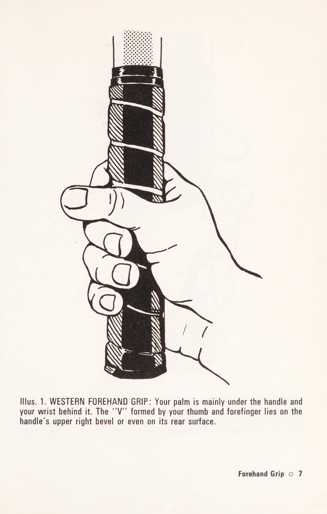
Minh họa. 2. CÁNH TAY TAY TUYỆT VỜI ĐÔNG: Chữ ''V'' nằm ở đâu đó trên góc xiên phía trên bên phải của cán vợt. Đặc điểm cơ bản của tất cả các loại vợt kiểu phương Đông, bao gồm cả phiên bản Extreme này, là lòng bàn tay và cổ tay của bạn có cảm giác chắc chắn phía sau cán vợt và đốt ngón trỏ lớn của bạn ấn vào bề mặt phía sau của cán vợt. 8 o Cách cầm vợt thuận tay
Minh họa. 3. TAY TAY ĐÔNG ĐÔNG: Lòng bàn tay và cổ tay của bạn có cảm giác chắc chắn phía sau cán vợt và đốt ngón trỏ lớn của bạn ấn vào bề mặt phía sau. Hình vẽ này cho thấy ngón cái và ngón trỏ chữ “V” nằm ở giữa mặt trên của tay cầm, nhưng nó vẫn là kiểu cầm kiểu phương Đông nếu chữ “V” này nằm ở bất kỳ đâu bên phải tâm của mặt trên.
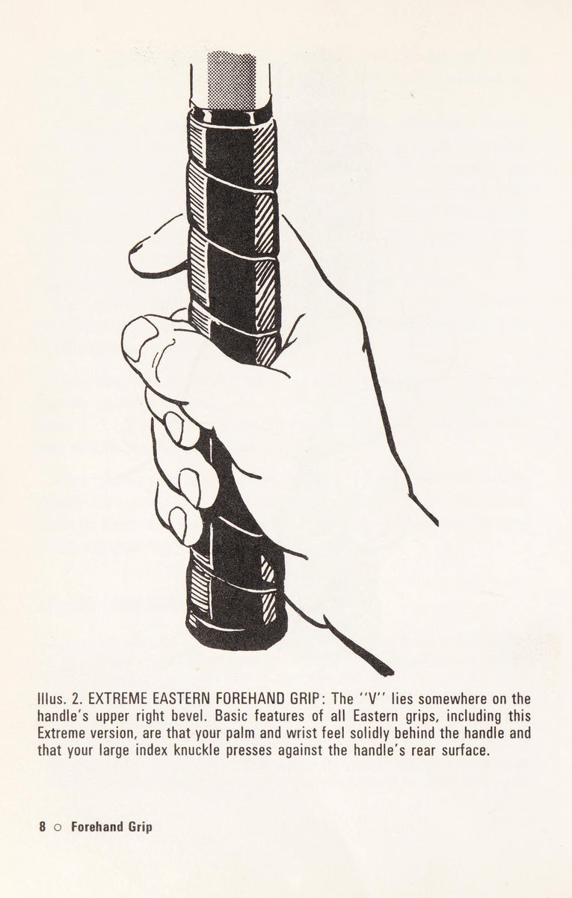
Minh họa. 4. TAY TAY ÚC: Kiểu cầm vợt kiểu phương Đông (Hình 3) có ngón cái và ngón trỏ chữ “V” nằm ở giữa mặt trên của cán vợt. Di chuyển "NV này sang bên trái ngược chiều kim đồng hồ sẽ đưa lòng bàn tay và cổ tay của bạn về phía bề mặt trên của tay cầm để chúng không còn cảm thấy chắc chắn phía sau nó nữa. Cách cầm như vậy chưa phải kiểu kiểu Lục địa (Minh họa. 5), nhưng nó chắc chắn không phải kiểu kiểu Đông phương. 10 o Cách cầm thuận tay
Minh họa. 5. TAY TAY LỤC TỤC: Theo Illus. 4, chữ “V"' hiện nằm ở góc xiên bên trái, đưa lòng bàn tay và cổ tay của bạn chắc chắn lên phía trên tay cầm, trái ngược với vị trí phía Đông của chúng là phía sau tay cầm. Cách cầm vợt Continental mang lại cho bạn ít lực về phía trước hơn so với kiểu cầm Eastern nhưng nếu sử dụng tốt với cổ tay tự do, nó cho phép bạn có sự khéo léo tuyệt vời khi chơi.
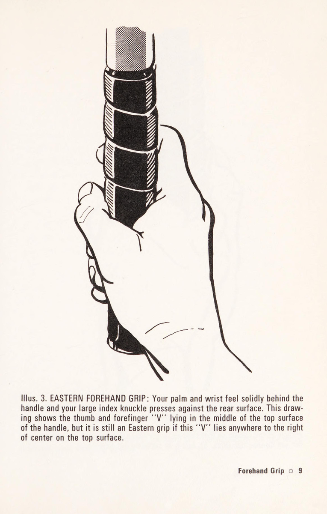
Minh họa. 1-5, có thể bạn sẽ đồng ý rằng phương Tây, Illus. 1, là cực đoan. Bạn có thể đánh những quả bóng cao ngắn bằng nó, nhưng bạn không thể tiếp cận xa và bạn cảm thấy vụng về với nó khi đánh những quả bóng thấp. Lục địa, Illus. 5, sẽ là cực đoan nếu bạn giữ cổ tay cứng trong suốt cú đánh. Hãy thử nó. Bạn thấy mặt vợt dốc về phía sau và bạn cũng móc bóng thay vì đánh nó. Với đầu gối cong tốt thì có thể nâng một quả bóng thấp lên, nhưng cách cầm như thế này gần như vô dụng đối với những quả bóng cao hoặc những quả bóng bay lên nhanh. Những người phản đối mạnh mẽ kiểu cầm vợt Continental chỉ chọn cách mô tả nó ở dạng cổ tay cực kỳ cứng nhắc này. Sau đó, những người ủng hộ nó mô tả nó ở dạng cổ tay tự do, khi nó trở thành kiểu cầm thuận tay linh hoạt nhất trong số các kiểu cầm vợt thuận tay dành cho bóng thấp, bóng rộng và những bóng ở phía sau người chơi. Các nhà phê bình sau đó nói rằng nó gây quá nhiều áp lực lên cổ tay và nó có rất ít lực chống lại những quả bóng cao. Những người bảo vệ phản bác bằng cách nói rằng chơi quần vợt giúp phát triển cổ tay khỏe mạnh và một người chơi giỏi có thể đưa bóng lên cao, do đó ngăn không cho bóng bay lên cao. Những người phản đối trả lời rằng Continental chỉ là giải đấu dành cho những nhà vô địch và chỉ một số nhà vô địch. Những người ủng hộ kết thúc bằng cách mời các nhà phê bình xem xét một số nhà vô địch này, chẳng hạn như Rod Laver! Tóm lại: m Sự kìm kẹp của phương Tây quá cực đoan. m Lục địa nên được gọi là Lục địa gây tranh cãi. m Nếu bạn sử dụng Continental và cảm thấy thoải mái với nó thì bạn lại không cảm thấy thoải mái, hãy nhắc lại là không sử dụng cách cầm vợt không đúng. m Nếu cú thuận tay Continental của bạn thực sự yếu, thì cách cầm này quá sức để bạn xử lý và do đó nó là một điểm yếu trong trò chơi của bạn. 12 © Cách cầm vợt thuận tay
Extreme Eastern Tay cầm Extreme Eastern (Minh họa 2) biểu thị sức mạnh. Bạn phải chạy xa hơn để đến phía sau quả bóng, để đánh bóng, hơn mức cần thiết với cách cầm vợt Continental, nhưng nó tạo ra một cú thuận tay không bao giờ yếu về mặt thể chất. Tương tự như vậy, tay cầm này là một giống lai—được biểu thị bằng việc nó có một tính từ để mô tả tên của nó. Nó có xu hướng tạo ra một cầu thủ có cú thuận tay mạnh và cú trái tay yếu. Lý do không khó để tìm ra: cách cầm vợt thuận tay EE đòi hỏi sự thay đổi cách cầm vợt nhiều hơn bất kỳ cách cầm vợt nào khác nếu bạn muốn có cách cầm vợt trái tay phù hợp. Continental yêu cầu ít thay đổi cho cú đánh trái tay và một số người chơi không thực hiện thay đổi nào cả. Nước Úc gần và phương Đông không xa. Người phương Tây có cách cầm vợt trái tay riêng: xoay đầu vợt lên trên và điều chỉnh một chút cho thoải mái, sử dụng cùng một mặt vợt cho cả thuận tay và trái tay. EE có sự thay đổi lớn nhất và do đó, hầu hết người dùng chỉ thay đổi cách cầm một phần trong quá trình sử dụng. Họ sử dụng kiểu cầm vợt trái tay tương đương với kiểu cầm vợt thuận tay của Úc, Illus. 4, hay thậm chí là phương Đông, Illus. 3. Tuy nhiên, nếu bạn là người chơi EE, một lần nữa bạn không sử dụng cách cầm vợt thuận tay không chính xác. Đông và Úc Đây là hai tay cầm ở giữa. Chúng được sử dụng bởi số lượng người chơi lớn nhất cho đến nay, đặc biệt là người phương Đông. Cả hai đều không có bất kỳ điểm yếu nội tại nào. Tuy nhiên, chúng không hề giống nhau. Với người phương Đông, bạn có cảm giác như đang ở phía sau quả bóng, còn với người Úc, bạn sẽ có cảm giác ở bên cạnh quả bóng nhiều hơn. Thay đổi cách cầm thuận tay của bạn Thay đổi cách cầm thuận tay của bạn là điều khó khăn nhất mà bạn có thể dự tính thực hiện, bởi vì cú thuận tay của bạn là cách cầm thuận tay tự nhiên nhất của bạn 0 13
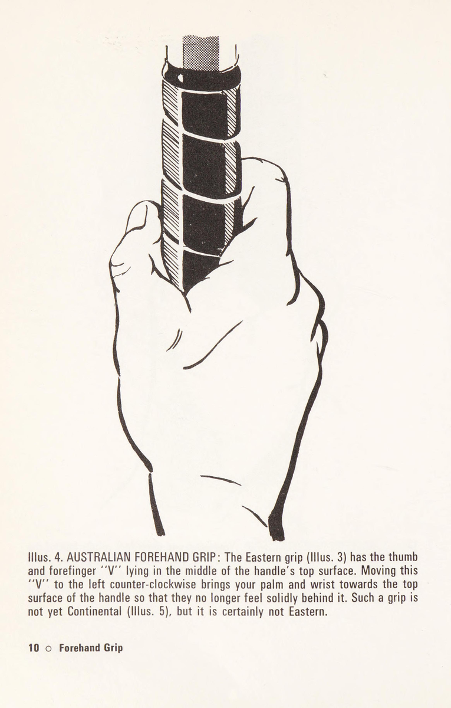
và bắn cá nhân. Ví dụ: nếu bạn có một cú thuận tay Extreme Eastern mạnh mẽ và trái tay không đầy đủ liên quan, thì gần như chắc chắn rằng bạn sẽ khôn ngoan hơn khi tăng tốc độ thay đổi cách cầm vợt của mình hơn là thay đổi cách cầm vợt thuận tay của bạn. Tăng cường điểm yếu không có nghĩa là làm suy yếu điểm mạnh. Tuy nhiên, vì lý do chính đáng này hay lý do khác, bạn có thể muốn thử nghiệm ít nhất một sự thay đổi. Dưới đây là một số ý tưởng về những gì bạn có thể mong đợi tìm thấy. Khi bạn vung vợt mà không có bóng, tất cả các kiểu cầm vợt đều mang lại cảm giác thoải mái và kiểu cầm vợt mà bạn định thử nghiệm cũng vậy. Tuy nhiên, khi bạn chơi với bóng, cách cầm vợt mới sẽ ít có khả năng mang lại cảm giác thoải mái trừ khi bạn cho phép vị trí tiếp bóng khác so với cơ thể của bạn. Cực Đông và Đông được liên kết: bạn ở phía sau quả bóng. Úc và lục địa có liên quan với nhau: lòng bàn tay của bạn hướng về phía trên của cán vợt. Nếu bạn thay đổi từ EE hoặc Eastern sang Australia hoặc Continental, bạn sẽ cảm thấy yếu hơn, chắc chắn là ngay từ đầu, có lẽ là luôn luôn. Một người ủng hộ phương Đông sẽ nói rằng nếu không thắc mắc, bạn sẽ luôn cảm thấy yếu đuối hơn, nhưng điều đó không khách quan. Tuy nhiên, không có lý do gì để bất kỳ cầu thủ phương Đông nào chuyển sang chơi Continental. Nếu bạn chuyển từ lục địa sang phương Đông, bạn sẽ cảm thấy mạnh mẽ hơn, nhưng có lẽ ban đầu hơi vụng về. Sự thay đổi này là cách được các huấn luyện viên khuyên dùng phổ biến nhất, nhưng các huấn luyện viên không can thiệp vào học trò có cú thuận tay Continental mạnh và tự nhiên. Nếu cú thuận tay yếu thì cách cầm vợt thường là kiểu Continental, và sau đó các huấn luyện viên sẽ đề xuất thay đổi kiểu cầm vợt kiểu Eastern ít đòi hỏi hơn. Một số, ít quyết liệt hơn, có thể khuyến nghị chỉ nên thay đổi từ Lục địa sang Úc. Nếu bạn là một người chơi phương Tây, trò chơi của bạn sẽ mạnh mẽ, nhưng bạn có thể cảm thấy khả năng cầm vợt của mình hạn chế bạn chơi toàn diện. Nếu bạn 14 o Cách cầm thuận tay
có cả thuận tay và trái tay kiểu phương Tây (có nghĩa là bạn sử dụng cùng một mặt vợt cho cả hai), bất kỳ sự thay đổi nào cũng sẽ rất lớn. Trong hầu hết mọi trường hợp, việc giữ nguyên như hiện tại sẽ mạnh mẽ và tự nhiên hơn. Phong cách phương Tây có thể quá hạn chế về tốc độ và sự đa dạng của lối chơi vô địch, nhưng nó mang lại lối chơi câu lạc bộ mạnh mẽ. Nếu bạn có một cú thuận tay kiểu phương Tây nhưng bạn phải thực hiện một sự thay đổi lớn về cách cầm để chơi một cú đánh trái tay với mặt đối diện của vợt của bạn, thì sự thay đổi mà bạn có thể nghĩ đến là sang một cú thuận tay Extreme Eastern. Rất ít rắc rối ở đây. Đây là sự thay đổi được thực hiện bởi Donald Budge vĩ đại. Anh ấy đã cải thiện cú thuận tay của mình rất nhiều. Mặc dù anh ấy vẫn phải thực hiện một sự thay đổi khá lớn về cách cầm vợt để có một cách cầm vợt trái tay phù hợp, nhưng anh ấy đã làm được điều đó và tạo ra cú đánh trái tay mạnh mẽ nhất trong lịch sử trận đấu. Bây giờ bạn có tất cả thông tin và có thể thử nghiệm và đưa ra quyết định. Nếu cách cầm vợt của bạn là kiểu Continental và cú đánh của bạn yếu, bạn có thể sẽ thay đổi nó. Nếu cú thuận tay của bạn chỉ là phương Tây, bạn có thể sẽ thay đổi nó thành Extreme Eastern. Ngoài ra, nhiều khả năng bạn sẽ nhận ra cách cầm thuận tay của mình tốt hơn bạn nghĩ. Vì vậy, cách cầm vợt của bạn sẽ không thay đổi, nhưng sự tự tin của bạn thì có.
2. Độ săn chắc của thuận tay: Loại bỏ tình trạng cổ tay bị xẹp & tiếp xúc yếu
2. SỰ CHẮC CHẮN CỦA THUẬN TAY NHIỀU NGƯỜI TAY TRÁI say sưa với những cú thuận tay mạnh mẽ của họ, và một số người thuận tay phải cũng sử dụng đi sử dụng lại cú đánh này, bởi vì đây là một phần nổi bật trong trò chơi của họ. Trên thực tế, hầu hết người chơi đều có cú thuận tay là một cú đánh mạnh - mặc dù nó có thể không nổi bật trong lối chơi chung trên toàn sân của họ. Chương này đề cập đến những người kém may mắn hơn, những người sợ chơi cú thuận tay. Nếu nó yếu hoặc thất thường, đối thủ sẽ cảm nhận được điều này và chọn cách tập trung những cú đánh chậm vào nó. Điều này làm cho người sở hữu cú thuận tay kém cảm thấy tự ti về mặt tinh thần, và cú đánh của anh ta trở nên chật chội và thiếu tự nhiên hoặc hoang dã và tuyệt vọng. Không có gì ngạc nhiên khi quan điểm trước trận đấu của anh ấy chủ yếu là lo lắng. Đó là một tình trạng khủng khiếp. Đánh mất sự tự tin Nhiều điều đã được nói và viết về cú thuận tay nói chung sẽ làm suy yếu sự tự tin của bất kỳ ai cảm thấy cú thuận tay của mình có thể hơi đáng ngờ. Và nếu anh ta cảm thấy như vậy thì đó là điều đáng nghi ngờ. Chúng ta hãy trình bày một số nhận xét này một cách cởi mở và đối mặt với chúng. mw Cú thuận tay là cú đánh dễ học nhất nhưng cũng là cú đánh dễ đi chệch hướng nhất và khó lấy lại nhất. m Việc phối hợp cú thuận tay sẽ khó khăn hơn vì nó là cú đánh nhỏ gọn nhất so với cơ thể của bạn. 16 © Độ chắc chắn của cú thuận tay
Bạn có xu hướng không xoay người sang lưới như bạn nên làm và như bạn làm với cú đánh trái tay, bởi vì động tác chân thuận tay của bạn kém tích cực hơn động tác chân trái tay của bạn. Vì động tác chân kém tích cực hơn, cú thuận tay của bạn có xu hướng xoay người trước khi bạn đánh bóng đúng cách. Bạn không quan sát bóng tốt như cú đánh trái tay, bởi vì bạn không cúi đầu xuống một cách tự nhiên khi bạn xoay người thực hiện cú đánh. m Cách cầm vợt thuận tay bản thân nó không mạnh bằng cách cầm vợt trái tay, do đó bạn cần vung vợt nhiều hơn cho cú đánh thuận tay, và điều này làm cho việc căn thời gian và kiểm soát của bạn trở nên khó khăn hơn. mw Tay cầm của bạn quá kiểu Continental nên mặt vợt mở và bạn đánh bóng lên và ra ngoài. Hoặc cách cầm vợt của bạn quá Tây nên bạn đánh xuống và quá ngắn. Hãy sử dụng tay cầm phương Đông và tất cả sẽ ổn. @Vậy bạn dùng bản Đông nhé. Sau đó, bạn nhận ra rằng tất cả các cú đánh khác của bạn đều được thực hiện với cách cầm ít nhiều giống nhau: Continental cho cú giao bóng và vô lê và Continental với ngón cái đưa ra cho trái tay. Chỉ có một cú đánh có cách cầm riêng - cú thuận tay của bạn. Cổ tay của bạn có xu hướng mềm hơn khi đánh thuận tay, do đó bạn có thể đánh bóng thay vì vuốt ve nó. Đó là một danh sách buồn. Biện pháp khắc phục Có lẽ, nếu trước đây bạn chưa nhận thức được một hoặc hai điều này, việc loại bỏ chúng sẽ đủ để sửa cú thuận tay của bạn và giúp bạn tự tin vào nó. Mặt khác Độ cứng thuận tay 0 17
, nếu danh sách này thuyết phục bạn rằng cú thuận tay là cú đánh phức tạp nhất trong quần vợt, bạn sẽ bắt đầu tự hỏi làm thế nào ngay cả một người mới bắt đầu cũng có thể chơi nó. Có manh mối của bạn. Khi một người mới bắt đầu chơi thuận tay, ít nhất anh ta cũng không phức tạp và tự nhiên. Bạn không thể như vậy nếu bạn cố gắng ghi nhớ toàn bộ danh sách các điểm đáng lo ngại khi bạn đang chơi một quả bóng đang chuyển động với chính cú đánh mà bạn thiếu tự tin. Hãy quên cú đánh của bạn một lúc, thay vào đó chỉ tập trung vào bóng và dây. Quả bóng Đầu tiên, quả bóng. Bạn biết rất rõ rằng bạn phải xem nó, và chỉ nói rằng điều này là không thuyết phục và có lẽ nhàm chán. Vì việc xem bóng rất quan trọng và rất dễ bị lãng quên nên bạn cần có phương pháp thực hiện riêng cho mình. Dưới đây là một số: m Xem bóng có ý thức. Khi bạn biết bạn đang xem nó, bạn sẽ thấy nó rõ ràng hơn. m Quan sát bóng suốt chặng đường từ đầu bên kia của sân. Khi bạn làm điều này, nó có vẻ chậm hơn nhiều và bạn cảm thấy mượt mà và thoải mái hơn. = Hãy quan sát quả bóng đặc biệt sau khi nó nảy lên. Điều này mang lại cho bạn một cái gì đó để tập trung vào. Nó cũng có xu hướng khiến bạn cúi đầu xuống một chút và ngăn ngừa lỗi thuận tay phổ biến là ngẩng đầu lên quá sớm. Hơn nữa, nó còn giúp bạn ổn định nhịp điệu thoải mái. m Dừng bóng bằng mắt. Ngay dưới đỉnh nảy của nó, quả bóng di chuyển với tốc độ chậm nhất so với đường đi của vợt của bạn khi xoay ngang hoặc xoay ngang. Cái nhìn tập trung của bạn gần như có thể làm cho quả bóng trông như thể nó đã dừng lại—và sau đó bạn có thể quét nó đi. 18 o Độ chắc chắn của cú thuận tay
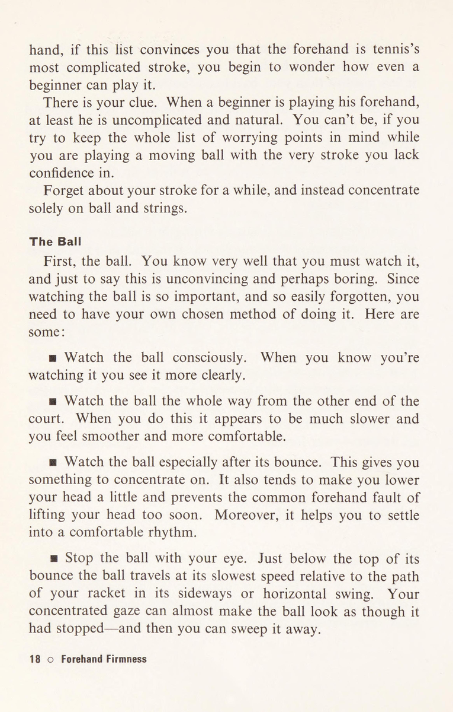
= Quan sát bóng ngay trên dây của bạn rồi đánh nó. Tất cả các phương pháp này đều hợp lý, mặc dù hai phương pháp cuối cùng phù hợp với lối chơi thả bóng hơn là chơi bóng lên. Hãy thử chúng và chọn một. Mang nó lên sân đấu với bạn. Vẫn còn một phương pháp khác để xem bóng. Điều này đòi hỏi phải theo dõi điểm tiếp xúc cho đến khi bóng đi mất, và những người thực hiện điều này cho rằng nó mang lại cho họ sự tập trung cao độ cho việc đánh bóng ở sân sau. Một khía cạnh cuối cùng của việc xem bóng là hoàn toàn sau đại học. Các nhà vô địch không phải lúc nào cũng theo dõi bóng khi ở quá gần dây của họ, đôi khi họ muốn có cái nhìn rõ ràng hơn về toàn bộ tình huống trên sân. Đôi khi họ có thể có được sự tự do này nhờ những nét vẽ có rãnh đặc biệt tốt của họ. Hãy biết về điều này và thử nó, nếu chỉ vì nó có thể thuyết phục bạn tốt hơn bất cứ điều gì khác rằng đối với những người kém cỏi, bạn càng xem bóng càng gần thì càng tốt. Khi trận đấu diễn ra, quả bóng trở nên mềm hơn và to hơn. Mỗi cú đánh làm giảm độ nén của nó một chút và làm xáo trộn lớp vải bọc của nó. Bạn biết điều này và đối thủ của bạn có thể không. Anh ta có thể lo lắng rằng trong set thứ ba của trận đấu, bóng trở nên nhẹ hơn và khó kiểm soát hơn. Thái độ của bạn là bạn sẽ nhìn và kiểm soát bóng tốt hơn, vì chúng to hơn và mềm hơn. Điều tiếp theo cần tập trung vào là đánh bóng qua lưới—luôn luôn. Bạn sẽ không cho mình cơ hội nếu sai lầm của bạn nửa vào lưới và nửa ra ngoài. Đánh mọi quả bóng qua. Điều này nghe có vẻ hiển nhiên, nhưng nếu bạn quan sát lỗi lầm của người khác, bạn sẽ thấy điều đó không hề rõ ràng đối với họ. Để đảm bảo rằng hầu hết các cú đánh của bạn đều đi vào sân, hãy sử dụng khả năng kiểm soát bóng. Đây là nơi dây của bạn xuất hiện.
Tiếp xúc lâu Giữ bóng trên dây của bạn. Mang bóng. Đi theo quả bóng. Tất cả những cụm từ này tạo nên sự liên lạc lâu dài. Sự tiếp xúc lâu dài chủ yếu ở trong tâm trí bạn, nhưng cũng ở đó về mặt vật chất. Quả bóng sẽ tiếp xúc với dây của bạn lâu hơn một chút. Đó chỉ là một điểm nhỏ. Vấn đề lớn nhất là sự khác biệt lớn trong khả năng kiểm soát tinh thần mà bạn nhận được. Để đơn giản, hãy sử dụng một ổ đĩa phẳng, Illus tương phản. 6 và 7. Ht & (STS ERERSSLS SAAS Ae ee eens 6g e ZEReSSGoees AE | aed eetel {GE SRERERCRERSRaRA Ice eee, Sl i SERS EERAECAERT ERE, NCL Eey RSE AEREV REELS AROL Illus. 6. LIÊN HỆ DÀI: Làm phẳng quả bóng dựa vào dây của bạn. Bạn có thể đánh mạnh nhưng với cảm giác kiểm soát. For luyện tập, chơi thuận tay sau khi thuận tay qua lưới với thời gian tiếp xúc lâu, đặc biệt nếu trước đây bạn đã đánh bóng, cú thuận tay dài của bạn sẽ có cảm giác khá nặng nề, qua giai đoạn hơi vụng về, bạn sẽ cảm nhận được sức nặng chắc chắn của quả bóng.
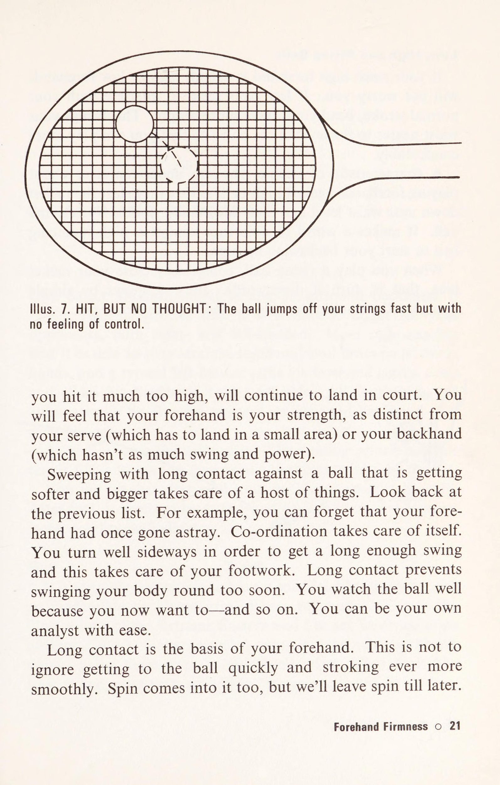
EEE ERR rH] Minh họa. 7. ĐÁNH, NHƯNG KHÔNG NGHĨ: Bóng nhảy khỏi dây của bạn nhanh nhưng không có cảm giác kiểm soát. bạn đánh nó quá cao, sẽ tiếp tục phải ra tòa. Bạn sẽ cảm thấy rằng cú thuận tay là sức mạnh của bạn, khác biệt với cú giao bóng của bạn (phải tiếp đất trong một khu vực nhỏ) hoặc cú giao bóng trái tay của bạn (thứ không có nhiều cú vung và lực). Việc quét với sự tiếp xúc lâu với một quả bóng ngày càng mềm hơn và lớn hơn sẽ giải quyết được rất nhiều việc. Nhìn lại danh sách trước đó. Ví dụ, bạn có thể quên rằng tay thuận của bạn đã từng bị chệch hướng. Sự phối hợp sẽ tự chăm sóc bản thân nó. Bạn nên xoay người sang ngang để có được cú swing đủ dài và điều này sẽ đảm bảo cho động tác chân của bạn. Tiếp xúc lâu sẽ giúp bạn không bị lắc lư cơ thể quá sớm. Bạn xem bóng tốt vì bây giờ bạn muốn—và vân vân. Bạn có thể là nhà phân tích của riêng bạn một cách dễ dàng. Tiếp xúc lâu là cơ sở cho cú thuận tay của bạn. Điều này không có nghĩa là bỏ qua việc tiếp bóng nhanh và vuốt bóng mượt mà hơn bao giờ hết. Spin cũng có trong đó, nhưng chúng ta sẽ để lại spin sau. Độ cứng thuận tay © 21
Bóng thấp, cao và bóng lên Nếu cú thuận tay cao đến thắt lưng của bạn ổn định, cú thuận tay cao hay thấp sẽ không làm bạn lo lắng. Nếu những quả bóng thấp dường như cản trở cú đánh bình thường của bạn, hãy uốn cong đầu gối của bạn sâu hơn. Điều này giúp thắt lưng của bạn gần ngang với mặt bóng hơn—để bạn có thể chơi thoải mái hơn. Một đặc điểm của những người thiếu tự tin khi chơi những cú thuận tay khi đối mặt với những quả bóng cao là họ bắt đầu vợt xuống gần ngang thắt lưng và sau đó lắc lư nó một cách không chắc chắn về phía bóng. Nó tạo nên sự khác biệt lớn so với một quả bóng có độ nảy cao để bắt đầu cú vung vợt lên cao của bạn. Khi bạn chơi một quả bóng đang lên, hãy cố ý đóng mặt vợt của bạn lại, tức là hướng nó xuống dưới. Ảo tưởng. Hình 8 thể hiện bằng hình học đơn giản kết quả của việc để mặt vuông với lưới. i es A \ a” haad > ANGLE B Pie 22 © Độ cứng thuận tay
3. Mức độ đầy đủ về trái tay: Khóa cổ tay & Căn chỉnh động tác chân sớm
3. TƯƠNG THÍCH BACKH MỘT RẤT RẤT LỚN khi có một cú đánh trái tay không tốt, nếu bạn thuận tay phải, đó là nó trở thành mục tiêu tự nhiên cho đối thủ của bạn, cả thuận tay phải và tay trái. Hầu hết những người thuận tay phải đều thấy dễ dàng nhất khi chơi các cú thuận tay thẳng và thuận tay chéo sân, và một người thuận tay trái điển hình sẽ kéo cú thuận tay của mình qua sân và trượt trái tay của anh ta sang phía bên kia. Tất cả bốn cú đánh sẽ tự động hướng về phía trái tay yếu của người thuận tay phải. Ngoài ra còn có máy đẩy mạng. Nguyên tắc chỉ đạo trong cuộc đời chơi quần vợt của anh ấy là đánh trái tay của đối thủ và chiếm lưới. Bạn có thể thấy rằng, trên hết, cú trái tay của bạn cần phải chắc chắn. Sau đó, nó cần phải tự do và linh hoạt như yêu cầu đầu tiên của nó, độ vững chắc, cho phép. Cách cầm vợt Hầu như không thể có được một cú đánh trái tay vững chắc nếu cách cầm vợt trái tay không đủ. Mời các bạn tham khảo thêm một lần nữa những hình minh họa về cách cầm vợt thuận tay Extreme Eastern và Eastern tại Illus. 2 và 3. Lấy vợt của bạn ra và thực hiện một vài cú vung trái tay bằng cách sử dụng các tay cầm này làm cách cầm vợt trái tay. Họ trông giống như Illus. 9 và ngay cả khi không có bóng để đánh, họ vẫn cảm thấy yếu đuối. Sự thỏa đáng trái tay © 23
2, tôi. 48808. IDESSRRaes SSSR RSnRs SSR aRR8R' 'HEBRSS RE, Illus. 9. Cách cầm vợt trái tay không phù hợp: Cách cầm vợt thuận tay Extreme Eastern hoặc Eastern sẽ yếu nếu được sử dụng làm cách cầm vợt trái tay của bạn. Mặt sau của bàn tay hướng về phía trước và cổ tay uốn cong. Bây giờ hãy thử cách cầm vợt thuận tay kiểu Úc (Minh họa 4), như kiểu cầm vợt trái tay. Sẽ tốt hơn, đặc biệt nếu bạn giữ cổ tay thấp nhưng vẫn không đủ mạnh để bạn tiến tới kiểu cầm thuận tay cuối cùng, kiểu Continental (Illus. 5) và lần này bạn không thất vọng. Gặp bóng khoảng 6 inch ở phía trước hông phải của bạn (hông gần lưới hơn khi bạn đứng nghiêng về phía lưới), bạn có cảm giác mạnh mẽ. Hầu hết người chơi thích củng cố cảm giác này bằng cách đưa ngón tay cái theo đường chéo về phía sau tay cầm. 24 © Sự thỏa đáng trái tay
Mô tả thế này là đủ rồi. Tuy nhiên, xin vui lòng xem Minh họa. 10 để xác nhận chung. Nói chung thôi, hãy giữ sự tự nhiên thoải mái của riêng bạn. IIlus. 10. ĐỘ TAY TRÁI ĐẦY ĐỦ Độ bám trái tay phù hợp © 25
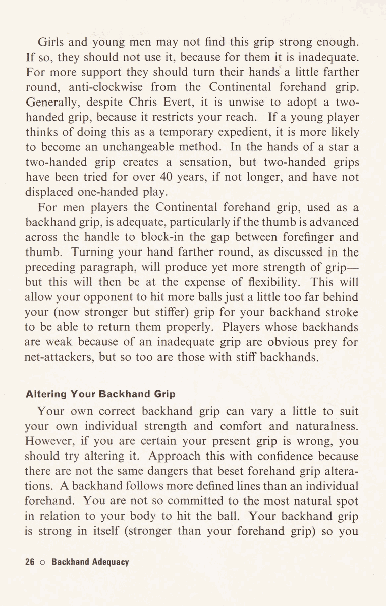
Các cô gái và chàng trai trẻ có thể không thấy lực bám này đủ mạnh. Nếu vậy thì họ không nên sử dụng nó, vì đối với họ nó không đủ. Để được hỗ trợ nhiều hơn, họ nên xoay tay xa hơn một chút, ngược chiều kim đồng hồ so với cách cầm vợt thuận tay kiểu Continental. Nói chung, bất chấp Chris Evert, việc áp dụng cách cầm vợt bằng hai tay là không khôn ngoan vì nó hạn chế tầm với của bạn. Nếu cầu thủ trẻ coi việc này là một phương tiện tạm thời thì rất có thể nó sẽ trở thành một phương pháp không thể thay đổi. Trong tay của một ngôi sao, cách cầm bằng hai tay tạo ra cảm giác thú vị, nhưng cách cầm bằng hai tay đã được thử nghiệm trong hơn 40 năm, nếu không muốn nói là lâu hơn, và vẫn không thay thế được cách chơi bằng một tay. Đối với những người chơi nam, cách cầm vợt thuận tay kiểu Continental, được sử dụng như cách cầm vợt trái tay, là phù hợp, đặc biệt nếu ngón cái đưa qua cán vợt để chặn khoảng cách giữa ngón trỏ và ngón cái. Xoay bàn tay của bạn ra xa hơn, như đã thảo luận ở đoạn trước, sẽ tạo ra lực cầm nắm mạnh hơn— nhưng điều này sẽ làm mất đi tính linh hoạt. Điều này sẽ cho phép đối thủ của bạn đánh nhiều bóng hơn một chút so với cách cầm vợt của bạn (bây giờ mạnh hơn nhưng cứng hơn) để cú đánh trái tay của bạn có thể đánh trả chúng đúng cách. Những cầu thủ có cú trái tay yếu do cầm vợt không đủ rõ ràng là con mồi của những kẻ tấn công lưới, nhưng những người có cú trái tay cứng cũng vậy. Thay đổi cách cầm vợt trái tay của bạn Cách cầm vợt trái tay chính xác của bạn có thể thay đổi một chút để phù hợp với sức mạnh, sự thoải mái và tự nhiên của cá nhân bạn. Tuy nhiên, nếu bạn chắc chắn cách cầm vợt hiện tại của mình sai, bạn nên thử thay đổi nó. Hãy tự tin tiếp cận điều này vì không có những mối nguy hiểm tương tự như việc thay đổi cách cầm thuận tay. Cú đánh trái tay đi theo các đường xác định hơn so với cú đánh thuận tay riêng lẻ. Bạn không quá tập trung vào vị trí tự nhiên nhất của cơ thể để đánh bóng. Bản thân cách cầm trái tay của bạn đã mạnh (mạnh hơn cách cầm thuận tay của bạn) vì vậy bạn 26 © Sự thỏa đáng trái tay
cần ít động tác ra sau hơn và điều này giúp bạn tính toán thời gian dễ dàng hơn, cho dù cách cầm vợt của bạn là nguyên bản hay đã được thay đổi. Nếu cách cầm bóng trái tay trước đây của bạn có thể được gọi là không đủ, thì cách cầm bóng mới sẽ luôn có cảm giác mạnh hơn và lúc đầu hơi vụng về. Nếu cách cầm trước đây của bạn chỉ là một lực, thì cách cầm mới sẽ luôn có cảm giác tự do hơn và lúc đầu hơi yếu. Thay đổi cách cầm vợt thuận tay sang cách cầm vợt trái tay Nếu cách cầm vợt trái tay trước đây của bạn không phù hợp, thì ít nhất sự thay đổi từ cách cầm vợt thuận tay của bạn để đạt được nó là không lớn. Cách cầm vợt trái tay phù hợp sẽ đòi hỏi sự thay đổi lớn hơn, nghĩa là bạn phải nhanh hơn. Tuy nhiên, bạn có thể thay đổi cách cầm vợt từ thuận tay sang trái tay vào thời điểm bạn lấy vợt về, nếu bạn biết cách thực hiện. Ví dụ, trong khi chờ đợi một quả giao bóng, hãy giữ cổ vợt của bạn giữa các ngón tay trái và bóng của ngón cái. Nếu bóng đến phía trái tay của bạn, hãy cầm vợt lại bằng tay trái, đồng thời vặn nhẹ cổ vợt theo chiều kim đồng hồ bằng ngón tay cái của bạn. Cách cầm vợt của bạn sẽ được thay đổi trước khi bạn vung vợt về phía trước. Đây là tin tốt nhưng đừng mạ vàng cho hoa huệ. Sự thật vẫn là những người chơi kiểu cầm vợt thuận tay của Continental nhanh chóng chuyển từ thuận tay sang trái tay hơn bất kỳ nhà tạo mẫu nào khác và nhược điểm chính của kiểu cầm vợt Extreme Eastern là sự thay đổi lớn đối với cách cầm vợt trái tay phù hợp. Động tác bằng chân Với cách cầm vợt vừa đủ, có lẽ điều quan trọng tiếp theo là phải nghiêng về phía lưới khi bạn đánh trái tay— trong thực tế, thậm chí còn hơn cả nghiêng sang một bên. Bạn có thể thực hiện điều này bằng động tác chân rõ ràng, hay chính xác hơn là đặt chân. Sự thỏa đáng trái tay © 27
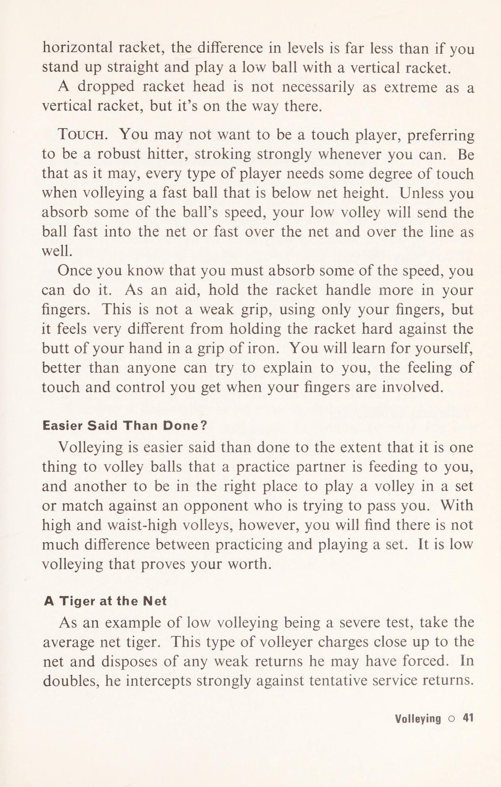
NET } Này ee! Ảo tưởng. 11. BƯỚC MẠNH VÀO TAY TRÁI: Bước một bước vững chắc về phía bóng bằng chân phải. Cong đầu gối phải của bạn. Cúi đầu xuống, tựa vai phải vào bóng. Bất cứ khi nào bạn không ở gần quả bóng, hãy bước mạnh về phía nó bằng chân phải, như minh họa trong Hình minh họa. 11. Đánh bóng bên ngoài Khi bạn học chơi trái tay, bạn được dạy phải nhắm thẳng. Bạn không nên nhắm theo một hướng và sau đó kéo bóng để đánh nó theo hướng khác. Điều này sẽ gây nhầm lẫn và có hại. Bây giờ bạn đã chơi được một thời gian và bạn có điểm yếu về trái tay 28 o Mức độ đầy đủ về trái tay
Minh họa. 12. MỘT SÚT CHUYỂN DƯỚI DƯỚI DƯỚI CUỘN VÀO: Đánh bóng ra bên ngoài, giống như đối với cú sút chéo sân, và bóng có thể vượt quá tầm với của đấu thủ lưới và cong trở lại bên trong đường biên. Sự thỏa đáng trái tay © 29
để vượt qua. Có lẽ bạn đã vô tình hình thành thói quen đánh trái tay vào trong bóng. Nếu điều này đúng, bạn sẽ rơi vào tình thế dễ bị tổn thương nếu đối thủ chơi sâu về phía trái tay của bạn và áp sát vào lưới. Lobbing một mình là không đủ tốt. Bạn muốn những cú chuyền bóng - chéo sân và dọc biên. Đối với hầu hết mọi người, đây là một cú đánh trái tay dễ thực hiện hơn so với đường dọc. (Chỉ những người đánh trái tay vào trong bóng mới thích đánh ra ngoài hơn là chéo sân.) Một cú chuyền ngang sân chủ yếu yêu cầu phải có góc và ngắn, vì nó phải đi qua cơ thể của cầu thủ đối phương và vẫn tiếp đất trong sân. Khái niệm đánh hơi ra ngoài bóng có thể sẽ cải thiện đáng kể sự tự tin của bạn khi thực hiện cú đánh này. Tóm lại đây là béte noire. Đối thủ của bạn dường như luôn che bóng và tung cú vô lê để giành chiến thắng, hoặc để đưa bóng ra khỏi tầm với của anh ta, bạn đánh bóng vào ngõ đánh đôi. Giải pháp: đã đọc đoạn trước, bây giờ hãy nhìn vào Hình minh họa. 12. Tận dụng tối đa cú đánh trái tay phía trong Cú đánh trái tay phía trong không phù hợp để thực hiện những cú chuyền bóng mạnh. Tuy nhiên, đó có thể là cách đánh bóng tự nhiên duy nhất của bạn. Bạn sẽ tập trung vào cú đánh của riêng mình và bạn muốn biết cách cải thiện nó để có thể thực hiện một cú đánh. Chơi nó bằng cảm ứng thay vì tốc độ. Nếu có sơ hở, bằng mọi cách hãy sử dụng tốc độ nhanh hơn. Khi bạn không thể vượt qua đối thủ ngay lập tức, hãy giữ bóng thấp và đặt bóng tốt nhất có thể. Hãy tin tưởng vào một cơ hội khác, một cơ hội khác để chơi. 30 © Sự thỏa đáng về trái tay
4. Khái niệm dịch vụ: Quỹ đạo đi xuống và cơ chế phân phối
4. Ý TƯỞNG GIAO DỊCH TỶ LỆ là 5-4 cho bạn, set cuối cùng, cú giao bóng của bạn. Bạn đang giao bóng cho set và match. Bạn chỉ phải giao bóng trong set đó. Chỉ một? Bạn muốn đối thủ của mình giao bóng và ít nhất anh ta sẽ là người phải tránh bất kỳ lỗi kép nào. Nếu vậy, đó là dấu hiệu đủ cho thấy cú giao bóng của bạn là một điểm yếu. Qua mạng Điều đầu tiên cần phải rõ ràng là cú giao bóng của bạn phải đi qua mạng. Đưa nó vào lại là một câu chuyện khác, nhưng nó phải đủ tự do để lướt qua mạng. Cú giao bóng là một cú đánh từ trên cao nên có xu hướng hướng xuống và luôn “muốn” đi vào lưới. Mọi người đều làm như vậy. Rõ ràng là nhiều máy chủ không nhận ra điều này. Bị ám ảnh bởi sự kiểm soát, họ kiểm soát quá mức. Họ thực hiện cú xoáy lên quá mức và bắt đầu vặn vẹo khi áp dụng nó. Họ ném bóng vào vị trí mà họ không thể đánh mạnh được. Và, sau tất cả những điều này, cú giao bóng của họ kết thúc vào lưới - nơi mà họ có thể đã hạ nó một cách nhẹ nhàng dưới cánh tay. Ngoài ra còn có rất nhiều máy chủ với các hành động miễn phí và không phức tạp, những người thực hiện cú giao bóng đầu tiên của họ vào lưới—và thực hiện cú giao bóng thứ hai của họ vào lưới một cách ngập ngừng. Khái niệm dịch vụ © 31
Thư giãn Nếu bạn căng thẳng về cú giao bóng của mình, bạn cần thư giãn. Dưới đây là ba cách: 1. Từ bỏ việc đặt quá nhiều hy vọng, chứ đừng nói đến tuyệt vọng, vào lần giao bóng đầu tiên của bạn để trở thành người chiến thắng. Thay vào đó, hãy mong đợi nó sẽ được trả lại. Sau đó, bạn sẽ di chuyển đến quả bóng và có thể tấn công từ đó. Với suy nghĩ này – rằng bạn sẽ sớm tấn công quả giao bóng của đối thủ hơn là nhận được quả giao bóng của anh ta – bạn sẽ không còn mong muốn thực hiện cú giao bóng của mình nữa. 2. Chấp nhận thực tế về đường đạn đạo rằng cú giao bóng của bạn có xu hướng đi xuống, nghĩa là nó có xu hướng tiếp đất ngắn hơn một chút so với điểm ngắm của bạn và giao bóng cho đường giao bóng. Khi bóng đi xa hơn điểm ngắm của bạn, bạn phải đánh nó ở phía dưới tâm của dây, tức là ở đâu đó giữa tâm và cổ vợt. 3. Đề xuất này nhất thiết chỉ dành cho một buổi thực hành và đặc biệt được khuyến khích nếu bạn có một hành động giao bóng bị ràng buộc và làm việc chăm chỉ. Đứng tốt bên trong đường biên và giao bóng đơn giản hơn từ đó, chỉ tập trung vào việc nhắm mục tiêu khi tiếp xúc lâu. Di chuyển trở lại đường cuối sân theo từng giai đoạn — từ đó lưới không còn trông quá xa để biện minh cho tất cả nỗ lực giao bóng mà bạn đã từng thực hiện trước đây. Cách cầm Bạn có thể đã nghe nói rằng bạn phải sử dụng cách cầm vợt thuận tay kiểu Continental (Hình 5) cho cú giao bóng của mình, nhưng mặc dù cách cầm vợt này là điều đáng mong muốn nhưng nó không bắt buộc. Một hành động giao bóng giống như một cú ném. Cho dù bạn thực hiện cú ném của mình thoải mái đến đâu thì vẫn có một số lực giật cổ tay trong đó — và kiểu cầm vợt Continental hỗ trợ việc bắt cổ tay trong một cú giao bóng. Nhưng nếu bạn cảm thấy khó khăn với cách cầm này, hãy giao bóng bằng cách cầm kiểu phương Đông của bạn. Nếu cổ tay của bạn không khỏe (như trường hợp của các cầu thủ trẻ và nhiều cô gái), thì kiểu Eastern là kiểu cầm giao bóng tốt hơn cho bạn so với kiểu Continental. 32 © Khái niệm dịch vụ
Swerve Rất ít người chơi sử dụng cách cầm vợt Extreme Eastern hoặc Western và giao bóng với mặt vợt phẳng. Phần lớn trong số họ sử dụng Continental hoặc Eastern và giao bóng với một mức độ cắt miếng nào đó. Lát này làm bóng chệch hướng một chút, từ bên phải của người giao bóng sang bên trái. Sự chuyển hướng không gây nhầm lẫn cho người nhận, vì vậy không có ích gì khi cắt nhiều để có thêm sự chuyển hướng. Bạn sẽ chỉ mất tốc độ và cuối cùng cũng đánh nhầm. Tuy nhiên, sự chuyển hướng có giá trị riêng biệt. Làm cong đường bay của bóng, dù chỉ một chút, sẽ giúp bóng có đường đi dài hơn sau khi vượt qua lưới và do đó có nhiều cơ hội rơi xuống sân hơn. Nó làm tăng thêm sự tự tin của bạn khi cảm thấy rằng bạn đang giao bóng/đảo bóng. Tất nhiên là qua mạng. Xoay người cũng giúp bóng có đường đi dài hơn từ bạn đến lưới và đó là một yếu tố khác khiến bóng có xu hướng rơi vào lưới. Bạn phải chuyển hướng nó và từ đó trở đi, những chuyển hướng 1 sẽ thay mặt bạn. Đừng lạm dụng nó, nếu không bạn sẽ phát triển một dịch vụ kỳ quặc và cuối cùng thấy mình cần đến liệu pháp Thư giãn Ba ở trên. Ném bóng Sai lầm phổ biến nhất mà người mới bắt đầu mắc phải là ném bóng quá thấp, nhưng nhiều người chơi trình độ trung bình lại ném bóng quá xa về phía trước. Phải thừa nhận rằng điều này tương đương với sự tự do, và chúng ta thấy các nhà vô địch ném bóng tốt về phía trước, nghiêng người và đánh vào đó với sự kết hợp tuyệt vời của sự tự tin tuyệt vời, tốc độ tuyệt vời và việc tiến nhanh vào lưới. Những người chơi ít hơn—máy chủ kém, máy chủ không tốt—có thể có được phần tự do nhưng chỉ có vậy thôi. Một cú ném quá xa về phía trước khiến họ tung cú giao bóng đầu tiên với tốc độ tối đa vào lưới và lo lắng vấp ngã về phía trước với quả giao bóng thứ hai. Kiểu máy chủ điềm tĩnh, người luôn có thể đưa quả bóng thứ hai của mình ra khỏi lưới và vào trong, và dường như không bao giờ bận tâm đến việc Khái niệm dịch vụ 0 33 như thế nào
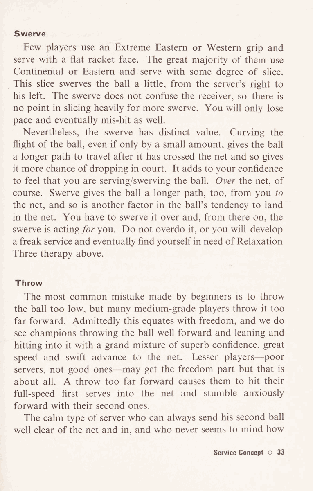
có thể có sự chậm trễ giữa lần giao bóng đầu tiên và lần giao bóng thứ hai, anh ta sẽ luôn thấy việc ném bóng ít về phía trước hơn. Ưu điểm cơ học của anh ấy là anh ấy có khả năng giữ thăng bằng tốt. Điều này dẫn đến tiêu chuẩn giao bóng thành công và điều này mang lại cho anh ta sự tự tin. Anh ta sẽ không bao giờ muốn đối thủ của mình giao bóng. Một lần nữa, hãy lưu ý điều này nhưng đừng lạm dụng nó. Nếu bạn gặp khó khăn trong việc ném bóng chính xác đến nơi bạn muốn, hãy tự kiểm tra hai điểm. Đầu tiên: bạn nên giữ bóng giữa đầu ngón tay cái và một điểm phía trên khớp đầu tiên của ngón trỏ và ngón giữa. Điều này mang lại cho bạn cảm giác tốt nhất về nó. Thứ hai: bạn không nên thả nó từ vị trí thấp xuống và do đó sẽ ném xa. Thả bóng qua vai của bạn. Xem các máy chủ tốt khác. Hai điểm này góp phần giúp bạn thực hiện cú ném tốt hơn là chỉ cầm một quả bóng trong tay. Với một quả bóng, bạn có thể mò mẫm tìm quả bóng thứ hai, hoặc chơi phần còn lại của lượt đánh với nó bị kẹt trong túi, hoặc bạn phải ném nó đi. Những người chơi hai tay, nhất thiết phải tham gia vào tất cả những điều này, nhưng người chơi một tay thì không nên. Các cặp giao bóng Điểm yếu trong giao bóng được các huấn luyện viên cũng như các nhà văn quần vợt chỉ trích nhiều nhất bao gồm một quả giao bóng đầu tiên bằng đạn đại bác mà thậm chí hiếm khi đi gần, và một quả bóng thứ hai dễ thương. Rõ ràng, tốt hơn là nên làm cho hai quả giao bóng gần với một tốc độ và có nhiều quả giao bóng đầu tiên. Tuy nhiên, một lần nữa, một số cầu thủ lại làm quá tay và giao bóng đầu tiên một cách quá thận trọng đến mức nó yếu và ngắn, thậm chí đôi khi còn ở trong lưới (điều này hầu như không gây ảnh hưởng gì). Có hai loại cặp giao bóng tốt. Một là trong đó hai quả giao bóng về cơ bản giống nhau ngoại trừ tốc độ bóng, và thứ hai bao gồm một cú giao bóng đầu tiên mạnh mẽ được hỗ trợ bởi một cú đá đáng tin cậy hoặc cú giao bóng xoáy lên thứ hai. Cả hai khái niệm đều đúng. 34 © Khái niệm dịch vụ
Khái niệm hai lần giao bóng tương tự giả định rằng cả hai lần giao bóng đều giống nhau trong hành động giao bóng và vị trí bóng được ném tới. Tốc độ hành động cũng tương tự nhau, có nghĩa là đối với cả hai cú giao bóng, bạn đánh bóng với tốc độ vợt như nhau. Sự khác biệt duy nhất là đối với quả bóng thứ hai, bạn sử dụng độ xoáy và độ xoáy nhiều hơn một chút để bóng có thể có khoảng trống trên lưới an toàn hơn (cao hơn) mà vẫn hạ cánh xuống sân. Tất nhiên, tốc độ của quả bóng thứ hai này có phần giảm đi. Kết quả là bạn sẽ nhận được rất nhiều quả giao bóng đầu tiên và những quả giao bóng trượt sẽ là người quan sát xuất sắc quả bóng thứ hai tiếp theo. Hệ thống này không có nghĩa là không linh hoạt. Vào những ngày thuận lợi, bạn có thể tăng tốc độ của quả bóng đầu tiên. Tuy nhiên, nếu đó là ngày tốt lành của bạn, chắc chắn bạn cũng sẽ tăng tốc ngày thứ hai. Trong mọi trường hợp, khái niệm này sẽ xây dựng sự tự tin của bạn. Nó làm cho bạn thực hiện hành động giao bóng một cách có mục đích và cảm thấy có mục đích—ngược lại với việc có một quả giao bóng đầu tiên khó phân biệt mà bạn hy vọng sẽ thực hiện được và một loại giao bóng thứ hai khó phân loại khác mà bạn sợ sẽ không thực hiện được. Cuối cùng, kiểu giao bóng đôi tốt này trở nên thoải mái. Nó phù hợp với kế hoạch trò chơi của bạn. Đúng, bạn phải mong đợi hầu hết các quả bóng sẽ được trả lại cho bạn, nhưng không nhất thiết phải hung hãn để bạn có thể tấn công từ đó. Khái niệm về cú giao bóng đầu tiên mạnh mẽ được hỗ trợ bởi một chân sút đáng tin cậy bay cao qua lưới và lao thẳng xuống sân một cách an toàn về cơ bản phụ thuộc vào độ tin cậy của cú giao bóng đó. Vì vậy, ý tưởng thực sự là bạn phát triển một cú giao bóng thứ hai chuyên nghiệp - và sau đó bạn sẽ có quyền khiến đối thủ phải khiếp sợ với cú giao bóng đầu tiên của mình. Đối với một cú giao bóng xoáy lên, hãy ném bóng ra sau xa hơn một chút so với bình thường và nhiều hơn về bên trái—khoảng trên đầu của bạn. Để lăn theo xoáy lên, vợt của bạn phải nâng lên khi chạm bóng, kết thúc cú xoay của nó sang bên phải chân phải của bạn. Để giao bóng cho người đá, hãy ném bóng xa hơn về phía bên trái của bạn, vì điều này khiến bạn phải quất bóng.
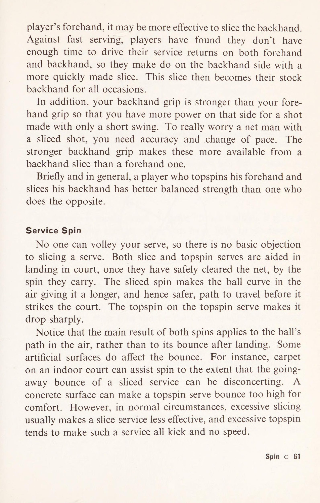
vợt lên mạnh hơn—tạo ra nhiều xoáy lên hơn và một cú đá khi nảy lên. Điểm hay của bất kỳ cú đánh xoáy lên nào là khi bóng đã bay qua lưới một cách an toàn thì nó có khả năng rơi vào lưới. Điểm tệ là bạn càng cố gắng đánh xoáy lên thì khả năng đánh sai càng cao. Các máy chủ nổi tiếng chủ yếu sử dụng cú giao bóng đầu tiên nhanh và cú đánh thứ hai hoặc cú đá mạnh. Vì vậy, hãy làm những máy chủ tốt nhất ở cấp độ thấp hơn. Bạn có thể trở thành một trong số họ. Bất kể điều gì khác mà phần này có thể làm, ít nhất nó cảnh báo bạn coi cú giao bóng của bạn như một cặp giao bóng. Chỉ nhận ra thôi thường là bước đầu tiên để khắc phục điểm yếu. Quan sát bóng Bạn làm điều này bằng cách ngẩng cao đầu cho đến khi bạn đánh được bóng. Các nhà vô địch không phải lúc nào cũng ngẩng cao đầu. Những cú xoay có rãnh có thể cho phép họ hạ đầu sớm hơn một chút để có nhịp điệu tốt hơn. Các cầu thủ chiều Chủ nhật cũng không ngẩng cao đầu, nhưng ở đây là sự thiếu hiểu biết và không nhịp nhàng. Khi bạn giao bóng qua lưới và nó đi ra ngoài, đó là do bạn đã không đánh vào giữa dây mà thay vào đó lại đánh xuống phần dưới nó. Và bạn làm điều này bởi vì bạn đã không ngẩng đầu lên để xem bóng. Liên hệ lâu dài? Có, chắc chắn bạn nên sử dụng nó. Tiếp xúc lâu sẽ cải thiện mọi cảnh quay mà bạn có thời gian sử dụng. Có một phần thưởng nữa. Khi tận dụng thời gian này, bạn sẽ không vội vàng giao bóng: một nguyên tắc cơ bản. 36 © Khái niệm dịch vụ
5. Cú vô-lê: Cơ chế đấm cú vô-lê & Sinh tồn bóng lưới thấp
9. BÓNG CHUYỀN 1 không phải là điểm yếu của người chơi bình thường. Có một vài lý do chính đáng tại sao không. Bạn thực hiện cú vô lê của mình từ gần lưới hơn so với những cú chạm đất, từ đó việc đánh bóng vào sân sẽ dễ dàng hơn. Quả bóng đang đến gần không thay đổi hướng nhiều như khi nó nảy lên trước khi bạn thực hiện cú đánh chạm đất. Quả bóng đang bay dễ đánh hơn là bóng nảy. Cú vô lê chỉ thực hiện một cú đánh ngắn nên tương đối dễ dàng căn thời gian cho bóng, chạm bóng ở vị trí mong muốn phía trước cơ thể và đánh bóng bằng chính giữa dây. Làm thế nào cú vô-lê có thể là điểm yếu của bất cứ ai? Có hai trường hợp cực đoan: nếu thị lực của bạn thay đổi, hãy tập trung chậm một cách bất thường hoặc nếu bạn quá tập trung vào nhịp giao bóng và cú chạm đất đến mức bạn bị tê liệt bởi một quả bóng đang bay. Ngoài hai trường hợp này, cú vô-lê có thể chỉ là một điểm yếu tương đối. Khi so sánh, khả năng vô lê của bạn có thể không tốt bằng những cầu thủ khác cùng tiêu chuẩn với bạn hoặc có thể không tốt bằng những cú chạm đất của bạn. Tuy nhiên, trên thực tế, mọi người đều có thể thực hiện cú vô lê một cú dễ dàng hơn cú đánh tiếp đất. Bước đầu tiên để khắc phục điểm yếu chung về cú vô-lê là thuyết phục bản thân về tất cả những điều này bằng cách xét xử trên sân. Quan sát bóng Nhiều người quan sát bóng đúng cách để thực hiện những cú chạm đất chứ không phải để thực hiện cú vô lê. Họ tưởng tượng tốc độ của một cú vô lê rất xa
lớn hơn nó. Họ không quan sát quả bóng suốt chặng đường và do đó chỉ nhìn thấy bóng mờ trong vài thước hoặc thậm chí là những bàn chân cuối cùng của quả bóng. Sau đó, họ chộp lấy nó. Họ tưởng tượng cú giật này là đúng hình thức, vì mọi người đều biết, phải không, rằng bạn không được vung vợt? Bạn đấm nó hoặc chặn nó. Nếu bạn quan sát quả bóng một cách bình tĩnh, cú đâm của bạn sẽ có cơ hội tốt để trở thành cú đấm hoặc cú chặn mà bạn mong muốn. Đón bóng Như một nguyên tắc chung cho tất cả các loại cú vô lê (có nghĩa là cao đến thắt lưng, cao hoặc thấp), bạn nên tiếp bóng xa hơn ở phía trước mặt mình (xa hơn phía trước bất kỳ hông nào hướng gần lưới hơn) so với khi bạn thực hiện cú chạm đất. Điều này giúp bạn nhìn bóng tốt hơn và cho phép bạn cầm vợt cứng hơn. Làm quá việc này sẽ khiến bạn mất cân bằng và bạn sẽ dễ dàng nhận ra điều này. Tay cầm Giống như dịch vụ, tay cầm của Continental không bắt buộc. Ưu điểm của nó trong việc giao bóng là cho phép bắt cổ tay nhiều hơn. Ưu điểm chính của nó trong chuyền bóng là trong các pha trao đổi tốc độ nhanh, bạn có thể nhanh hơn giữa thuận tay và trái tay. Những ưu điểm khác là nó dễ dàng hơn khi thực hiện cú vô lê thấp và giúp bạn tiếp cận bóng rộng hơn. Xin lưu ý rằng không có lợi ích nào cả nếu bạn không cảm thấy tự tin khi bắt vô lê với kiểu cầm Continental. Hãy bắt cú vô-lê với kiểu cầm vợt phương Đông nếu bạn cảm thấy thoải mái hơn theo cách đó - bạn sẽ kém khéo léo hơn nhưng mạnh mẽ hơn và nhìn chung hiệu quả hơn. Bạn có thể là một người chơi ít hoặc không để ý đến cách cầm vợt. Mặt khác, bạn có thể thuộc loại ngược lại. Bạn có thể đã đọc một cuốn sách có sức thuyết phục, chẳng hạn như cuốn của Tilden vĩ đại, khuyên bạn nên lái xe về hướng Đông nhưng theo kiểu lục địa. Đối với bạn, đây có thể là trường hợp một cuốn sách khiến người chơi nhiều hơn 38 © Volleying
hại nhiều hơn lợi. Hãy thử mọi thứ, thử nghiệm—nhưng hãy chọn điều gì bạn cảm thấy hiệu quả nhất. Bạn sẽ không sai đâu. Về những hiểu lầm có thể xảy ra này, có lẽ bạn nằm trong số những người đã hiểu sai nguyên lý về cú vô-lê, **Hãy ngẩng cao đầu vợt.” Điều này có nghĩa là bạn không nên để đầu vợt của mình rơi xuống mà thay vào đó hãy giữ nó ít nhất thẳng hàng với cổ tay của bạn hoặc cao hơn một chút. Không hiểu, một số người chơi vô-lê với đầu vợt hướng lên trên, tạo thành một góc nhọn giữa cán vợt và cánh tay. Điều này làm cho chúng không tự nhiên và chật chội, dẫn đến cú vô lê yếu. Những cú chuyền cao Đây khó có thể là điểm yếu của bất kỳ ai. Nơi dễ dàng đánh chúng nhất là ở sân rộng trước mặt. Một cách dễ hình dung là khu vực này lớn hơn lưới và khoảng trống giữa dọc dây (down the line) và hàng rào. Tuy nhiên, hãy luôn nhớ xoay sang một bên, nếu không bạn có thể nghiêng bóng quá nhiều và đánh bóng qua đường biên một cách không cần thiết. Những cú vô lê thấp Ngược lại với một cú vô lê cao, nơi dễ dàng nhất để thực hiện một cú vô lê thấp là vào lưới. Khi thực hiện cú đánh nhanh, cú vô lê thấp của bạn có thể đi qua lưới và vượt ra ngoài đường biên ngang. Để thực hiện cú vô lê thấp tốt, bạn cần có kỹ thuật và cảm giác chạm bóng. KỸ THUẬT. Bởi vì cú vô lê ngang thắt lưng rất dễ dàng và tự nhiên nên kỹ thuật chuyền bóng thấp hợp lý nhất là đưa thắt lưng của bạn xuống ngang tầm bóng, xa nhất có thể. Cách bạn làm điều này là uốn cong đầu gối của bạn. Hãy chuẩn bị uốn cong chúng thật sâu, nếu cần thiết, ngay lập tức hạ xuống tư thế ngồi xổm. Việc uốn cong lưng cũng chẳng ích gì, vì khi đó bạn sẽ mất thăng bằng. (Xem Hình minh họa 13 ở trang tiếp theo.) Đưa thắt lưng của bạn xuống bóng có nghĩa là bạn có thể thực hiện cú đánh của mình một cách bình thường, cụ thể là bằng đầu vợt.
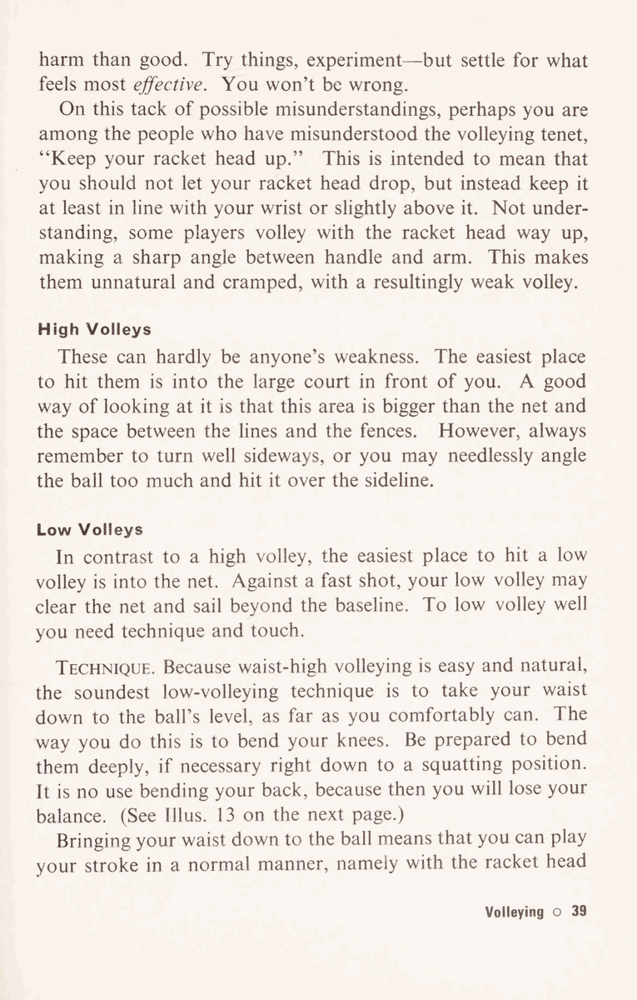
Minh họa. 13. KỸ THUẬT BÓNG CHUYỀN THẤP: Đưa eo xuống bóng, lưng thẳng, đầu gối cong. thẳng hàng với cổ tay của bạn hoặc cao hơn một chút. Bạn sẽ không cần phải đánh rơi đầu vợt của mình - và bây giờ là lúc để hiểu tại sao đây là phong độ kém. Hãy so sánh cây vợt có chiều ngang ít nhiều thông thường của bạn với cây vợt thẳng đứng, nghĩa là đầu vợt hướng xuống mắt cá chân của bạn. Mục tiêu của bạn là đưa bóng đi đâu đó cách lưới từ 3 đến 6 inch. Với vợt ngang, một sự khác biệt nhỏ về thời gian và điểm chạm bóng sẽ không làm thay đổi nhiều độ cao cú đánh của bạn. Nói cách khác, bạn có một giới hạn an toàn cho sai sót. Ngược lại, nếu bạn đến muộn với vợt dọc, bóng sẽ bay tốt vào lưới, còn nếu bạn đến sớm thì bóng sẽ bay lên cao. Một điều nữa là quả bóng càng gần tầm mắt của bạn thì bạn càng có thể nhìn thấy nó rõ hơn. Bạn không thể đưa mắt nhìn thẳng vào quả bóng, nhưng khi chơi với đầu gối cong và
vợt ngang, sự khác biệt về trình độ sẽ ít hơn nhiều so với việc bạn đứng thẳng và đánh bóng thấp bằng vợt dọc. Đầu vợt bị rơi không nhất thiết phải cực đoan như vợt thẳng đứng, nhưng nó đang trên đà đạt được điều đó. Chạm. Bạn có thể không muốn trở thành một người chơi cảm ứng, thích trở thành một người đánh mạnh mẽ, vuốt ve mạnh mẽ bất cứ khi nào có thể. Tuy nhiên, mọi kiểu cầu thủ đều cần có một mức độ chạm nhất định khi vô lê một quả bóng nhanh dưới độ cao của lưới. Trừ khi bạn hấp thụ một phần tốc độ của quả bóng, cú vô lê thấp của bạn sẽ đưa bóng nhanh vào lưới hoặc nhanh qua lưới và vượt qua vạch vôi. Một khi bạn biết rằng bạn phải hấp thụ một phần tốc độ, bạn có thể làm được điều đó. Để hỗ trợ, hãy giữ cán vợt nhiều hơn trong ngón tay của bạn. Đây không phải là cách cầm vợt yếu, chỉ sử dụng ngón tay, nhưng nó có cảm giác rất khác so với việc bạn cầm vợt thật mạnh vào mông bàn tay trong tay cầm bằng sắt. Bạn sẽ tự mình tìm hiểu, tốt hơn bất cứ ai có thể cố gắng giải thích cho bạn, cảm giác chạm và kiểm soát mà bạn có được khi các ngón tay của bạn tham gia. Nói dễ hơn làm? Cú vô-lê nói dễ hơn làm đến mức đối với những quả cú vô-lê mà bạn tập đang đưa cho bạn là một chuyện, và một chuyện khác là ở đúng vị trí để thực hiện cú vô lê trong một set hoặc trận đấu với một đối thủ đang cố gắng vượt qua bạn. Tuy nhiên, với những cú vô lê cao và ngang thắt lưng, bạn sẽ thấy không có nhiều khác biệt giữa luyện tập và chơi một hiệp. Cú vô lê thấp chứng tỏ giá trị của bạn. Một con hổ ở lưới Như một ví dụ về cú vô lê thấp là một bài kiểm tra nghiêm ngặt, hãy lấy con hổ ở lưới trung bình. Kiểu tấn công vô lê này áp sát lưới và loại bỏ bất kỳ cú trả bóng yếu nào mà anh ta có thể đã ép buộc. Trong nội dung đánh đôi, anh ta đánh chặn mạnh mẽ những cú trả giao bóng dự kiến.
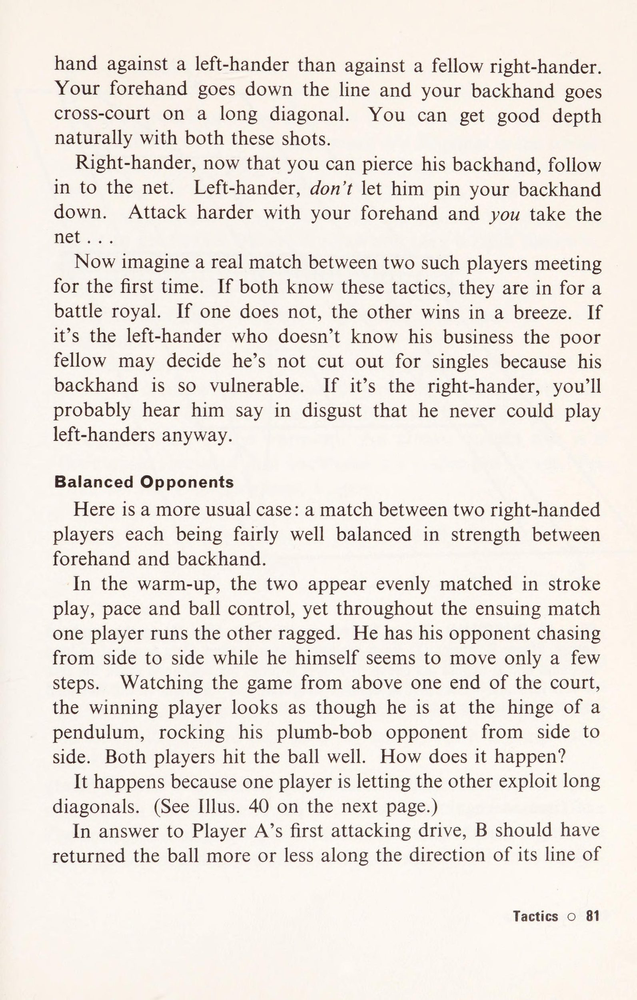
Về mặt xa thì đó là một lối chơi tốt nhưng trừ khi khả năng vô lê thấp của anh ấy cũng tốt, kiểu cầu thủ này sẽ nhanh chóng biến thành một con hổ giấy. Khả năng vô lê cao và sự nhanh nhẹn là chưa đủ để trở thành một vận động viên vô lê thực thụ. Một người đàn ông khó vượt qua Đây là người đàn ông có thể được gọi là một tay chuyền bóng. Đảm bảo an toàn ở mọi điểm, anh ta không cần phải tập trung quá gần lưới (nơi bạn có thể dễ dàng lốp bóng qua anh ta) để tránh một cú vô lê thấp. Anh ta đưa càng nhiều bóng càng gần lưới và cao hơn lưới càng tốt, nhưng anh ta chỉ tiếp cận sau khi đã đánh giá cú sút của bạn. Nếu bạn chơi bóng thấp, anh ấy có thể xử lý một cú vô lê thấp. Nếu bạn lốp bóng, vị trí của anh ta đủ xa để che chắn nó. Tương tự như vậy, vị trí của anh ấy giúp anh ấy có nhiều thời gian hơn để thực hiện những cú chuyền bóng cố gắng của bạn. Anh ấy luôn ở đó. Anh ta được biết đến như một người đàn ông khó vượt qua. Tất nhiên, anh ấy còn có một thứ khác dành cho mình: dự đoán. (Chúng ta sẽ đề cập đến vấn đề đó sau.) Trong khi đó, anh ấy sẽ không bao giờ phát triển thành mẫu người như hiện tại nếu không có sự tự tin trong cú vô-lê thấp. 42 o Vận chuyển
6. Điểm yếu của Half-Volley, Lob, Smash và thuận tay trái
6. HALF-VOLLEY, LOB, SMASH VÀ KIẾM KIẾM TAY TRÁI MỘT HALF-VOLLEY CHÍNH HÃNG không phải là một cú đánh khó. Điều bạn thực sự muốn tránh là thực hiện cú vô lê muộn một cách ngập ngừng, để nó trở thành một cú đánh có khoảng 3/4 cú vô lê và 1/4 bóng bay lên. Cú chuyền nửa bóng thành công là chơi bóng càng gần điểm tiếp xúc với mặt sân càng tốt. Bất cứ khi nào bạn có thể làm điều này, cú vô lê nửa chừng sẽ trở nên dễ thực hiện hơn so với cú vô lê rất thấp. Cổ tay của bạn sẽ ít bị căng hơn và bạn sẽ không có khả năng đánh bóng vào lưới. Cho dù cú vô lê nửa người là kiểu gần mặt đất dễ hay khó, thì kỹ thuật tốt nhất cũng tương tự như cú vô lê thấp: uốn cong đầu gối của bạn sâu để đưa thắt lưng của bạn xuống bóng, sau đó chơi bằng vợt ngang. Nhưng không nhất thiết phải chặn bóng như bạn thực hiện cú vô lê. Thay vào đó, sau một cú backswing rất ngắn, hãy thực hiện mạnh mẽ bằng cách che phủ xoáy lên. Điều này là một phần không thể thiếu của cú đánh vì bạn đánh bóng với mặt vợt đóng. (Tham khảo Minh họa 8, liên quan đến cách chơi bóng lên thuận tay.) Lob yếu Nhiều người chơi dường như có một điểm mù trong vấn đề lốp bóng. Họ hiếm khi đánh sai quả bóng và đưa bóng lên không thành công theo hình lốp bóng, nhưng lại quá ngắn. Nó gặp đúng số phận của mình và mười phút sau họ lại làm điều tương tự. Nửa cú vô lê o 43
Minh họa. 14. NHẮM MỘT LOB: B là điểm ngắm thay vì C. AB chỉ cách AC khoảng một nửa. Ngoài ra, vì bạn thực hiện cú lốp bóng hướng lên trên nên điểm ngắm của bạn sẽ phù hợp hơn với điều này. Có một nghịch lý là bất cứ ai cũng có xu hướng lốp bóng ngắn, khi bạn cho rằng cú lốp bóng này là cú đánh duy nhất trong quần vợt đôi khi được đánh ra tốt hơn là đánh một cách yếu ớt khi bắt đầu chơi. Một cú cắt bóng ngắn đáng thương có thể hủy hoại tâm hồn. Nếu có người xem, bạn sẽ cảm thấy xấu hổ về bản thân và có thể bạn cũng sẽ cảm thấy tự ti về điểm tiếp theo. Nếu cú lốp bóng của bạn đi ra ngoài, đối thủ trên lưới của bạn có thể đã buộc phải quay lại và đuổi theo nó thật mạnh. Khi đó, chính bạn chứ không phải anh ta mới là người tự tin hơn vào trận đấu tiếp theo. Đối với một số người chơi, bài giảng ngắn này có thể là đủ, nhưng bạn có thể yêu cầu hỗ trợ nhiều hơn khi thực hiện cú đánh. Suy cho cùng, một cú lốp bóng không phải là mục tiêu dễ dàng—không ai có thể thổi bay bất cứ thứ gì mình muốn nhắm tới. Ngoài ra, một cú lốp bóng phải được thực hiện một quãng đường dài, từ đường cuối sân đến đường cuối sân. Bạn có thể muốn thử giảm một nửa khoảng cách này. Thay vì nhắm để đưa bóng đến gần đường biên ngang của đối phương (dù sao thì khó nhắm được), hãy nhắm bóng đến điểm cao nhất của nó. (Xem Minh họa 14.) Phương pháp lốp bóng này mang tính cơ học hơn là tự nhiên, vì vậy đừng ngạc nhiên nếu bạn cảm thấy khó khăn. Hãy thử nó để xem nó có phù hợp với bạn không, và ngay cả khi cuối cùng bạn loại bỏ nó, bạn vẫn sẽ học được điều gì đó về việc lốp bóng. 44 o Thùy
Đập vỡ Nghe có vẻ sai lầm khi gọi cú đập bóng của bất kỳ ai là điểm yếu nếu một nửa rắc rối của anh ta là anh ta đánh nó quá mạnh. Tuy nhiên xét về điểm thắng chắc chắn đó là một điểm yếu. Tệ hơn nữa, nó đổi vị thế thắng lấy vị thế thua. Khi khắc phục cú đập bóng của mình, bạn có thể muốn biết rằng cú đập bóng có xu hướng mắc lỗi thường xuyên hơn bất kỳ cú đánh nào khác: hơn bảy trong số mười cú đập bóng trượt vào lưới chứ không phải ra ngoài. Thống kê này đã có từ rất lâu trước thời của Bill Tilden hùng mạnh vào những năm 1920, vì ông đã trích dẫn nó. Hãy tự mình quan sát lỗi lầm thường xuyên này và sau đó hoàn toàn ý thức được nó. Để đối phó với một cú lốp bóng sâu, hãy nhắm bóng qua lưới, chúng ta// qua nó. Khi một cú đập được thực hiện, nó thường xuất hiện ở một khoảng cách xa, sau một đường bay lên trên của bóng. Bạn sẽ nhận ra đây thực sự là một dạng đánh nhầm chứ không phải là đánh nhầm gỗ. Các dây đánh bóng từ phía dưới tâm của chúng. Vì vậy, hãy đánh bằng chính giữa dây của bạn và nhắm bóng qua lưới. Quả bóng hướng xuống dưới. Nếu bạn không tự tin với cú đập bóng của mình, chắc chắn mối lo lắng lớn nhất của bạn là tính toán thời điểm cho một cú lốp bóng cao hoặc sâu. Có khả năng là phương pháp hiện tại của bạn là đợi một khoảng thời gian hợp lý để có bóng và sau đó nhanh chóng thực hiện hành động giao bóng đầy đủ của mình. Lý do? Bạn đã nghe và thậm chí đã thấy trên báo chí rằng cú đập bóng của bạn phải giống hệt với cú giao bóng của bạn. Thực tế là cú đập bóng của bạn phải rất giống với cú giao bóng của bạn (bạn sẽ thực hiện theo cách đó một cách tự nhiên), nhưng nó không nên giống hệt nhau. Các hoàn cảnh khác nhau nên cú đập của bạn sẽ trở thành một cú giao bóng được sửa đổi một chút. Bạn không cần phải hành động nhiều. Nói một cách ngắn gọn: để giao bóng, hãy đưa vợt của bạn lên sau lưng; để đập vỡ, đưa nó lên trước cơ thể của bạn. Chờ bóng, cầm vợt sẵn sàng trên vai. Để tự trấn tĩnh, hãy đưa tay trái của bạn lên bóng. (Xem Minh họa 15 ở trang tiếp theo.) Smash o 45
Minh họa. 15. THIẾT LẬP ĐỂ ĐẬP: Chuẩn bị sẵn vợt và giữ vững tay trái của bạn. Vào thời điểm cuối cùng, hầu hết các cầu thủ giỏi đều bay lên cao để đón bóng. Hãy thử nó. Nó giúp bạn không có cảm giác khủng khiếp rằng quả bóng đang rơi xuống người bạn và chính nó, chứ không phải bạn, quyết định khoảng thời gian cuối cùng. Nếu bạn cảm thấy an toàn hơn trên mặt đất, hãy ở lại đó, vì cảm giác chính bạn cần khi đập bóng là sự an toàn. Tốc độ vốn có của một cú đập bóng là tất cả tốc độ bạn cần. 46 o Đập vỡ
Người thuận tay trái Phần này dành cho người thuận tay trái, khác với việc thi đấu với người thuận tay trái. Điểm yếu điển hình của người thuận tay trái là trái tay yếu, vô lê thất thường và hướng có thể đoán trước được bằng các cú đánh trên cao. Giả sử bạn là một người thuận tay trái "'điển hình''. Cú trái tay yếu của bạn bắt nguồn từ việc học tennis bằng cách chơi đánh đôi với các đối tác thuận tay phải, luôn ở phần sân bên trái. Bạn thấy rằng bạn có thể chơi hầu hết mọi cú giao bóng trả giao bóng bằng thuận tay của mình và do đó bạn đã sử dụng cách cầm vợt hiệu quả nhất cho việc này, miễn là bạn không lo lắng nhiều về tay trái của mình. Đây là kiểu Extreme Eastern. Như đã giải thích trong Chương 1, kiểu cầm vợt này cần sự thay đổi cách cầm vợt nhiều nhất nếu bạn muốn có một cách cầm vợt trái tay thích hợp. Kiểu cầm vợt điển hình Người thuận tay trái chỉ sử dụng cách cầm vợt trái tay không phù hợp để tránh người đánh lưới đối phương trong đánh đôi, người thuận tay trái phải đánh một cú trả giao bóng trái tay về phía bên trái của mình. Một người thuận tay trái điển hình thực hiện điều này, với cách cầm vợt trái tay không phù hợp, bằng cách nâng khuỷu tay lên, thả đầu vợt xuống và đánh rõ rệt vào bên trong quả bóng. 12. Điều đáng tiếc là cú trái tay ít hơn này lại trở thành cú đánh tự nhiên nhất của người thuận tay trái. Đừng thay đổi cú thuận tay của bạn (chắc chắn là một cú đánh mạnh) hoặc cách cầm của nó. Thay vào đó, hãy tập thay đổi cách cầm vợt nhanh hơn nhiều để bạn có thể sử dụng cách cầm vợt trái tay phù hợp hơn. Chơi tất cả các hiệp tập đánh đôi của bạn từ sân bên phải nếu có thể. Thực hành trái tay chéo sân với cổ tay hạ thấp, thay vì khuỷu tay giơ lên. Chơi ở phần sân bên trái khi bạn thi đấu, bởi vì chiến thuật cơ bản là sử dụng cú đánh tốt nhất, cú thuận tay của bạn, càng nhiều càng tốt. Nguyên nhân cú vô lê của bạn thất thường là do bạn thuận tay trái © 47
cú vô lê thuận tay và trái tay ít giống một cặp hơn so với cú vô lê của người thuận tay phải. Bạn có xu hướng thực hiện cú đánh dài hơn ở phía thuận tay và có kiểu đánh khuỷu tay nâng lên, đầu vợt thả xuống cho các cú vô lê trái tay của bạn. Hướng đánh trên cao (giao bóng và đập bóng) có thể đoán trước của bạn là hướng việt vị, tức là hướng về góc thuận tay của người thuận tay phải. Lý do? Bạn đã học cách giao bóng từ phía đầu tiên, từ đó người thuận tay phải học đường cong nhưng người thuận tay trái sẽ học cách đưa bóng đi xa. Thời gian trôi qua, người thuận tay phải thay đổi hướng của mình nhiều hơn so với người thuận tay trái thông thường. Những điểm yếu chưa được chỉ ra đã được chữa khỏi một nửa. Nửa còn lại tùy thuộc vào bạn. Nếu bạn là một người thuận tay trái điển hình thì bạn không hề thiếu tự chủ. 48 o Người thuận tay trái
7. Động lực xoáy: Vật lý xoáy lên, xoáy xuống và xoáy ngang
7. SPIN SPIN CÓ THỂ LÀ ĐIỂM YẾU CỦA BẠN theo ít nhất một trong ba cách sau: m Bạn dễ bị đối thủ sử dụng nó. Bạn không sử dụng nó để tạo lợi thế và hạn chế cả tính hiệu quả cũng như phạm vi cú đánh của bạn. @ Bạn làm quá rồi. Để khắc phục những điểm yếu này bạn cần có sự hiểu biết thấu đáo về độ xoáy. Kiến thức một phần thì không tốt lắm. Điều đó thường có nghĩa là bạn cần phải suy nghĩ mọi việc khi bạn không có thời gian. Có lẽ điều đầu tiên cần hiểu về độ xoáy là ở một mức độ nào đó nó có mặt trong mỗi cú đánh của bạn. Một cú giao bóng bằng súng thần công có thể được gọi là phẳng, nhưng thường có một số phần cắt hoặc xoắn trong đó. Ngay cả khi không có, hoạt động của dây vợt đi qua quả bóng sẽ tạo ra dấu vết lăn về phía trước của quả bóng. Lấy vợt của bạn ra, cầm theo kiểu Continental, thực hiện động tác giao bóng phẳng, và bạn sẽ hiểu ý tôi. Tương tự, cái gọi là ổ đĩa phẳng chỉ tương đối phẳng. Thực hiện theo hành động của một cú đánh phẳng từ từ bằng vợt của bạn và chú ý rằng, mặc dù vợt có thể gặp bóng phẳng, nhưng nó bắt đầu nâng lên trong cú vung về phía trước trước khi bóng rời khỏi dây. Do đó, một lượng xoáy về phía trước đã được truyền vào quả bóng. Nếu bạn phần nào không chắc chắn về độ xoáy, bạn có thể cảm thấy thoải mái hơn khi biết rằng có một mức độ nào đó của độ xoáy trong tất cả các cú đánh thông thường của bạn. Tuy nhiên, bạn có thể thấy rằng “‘xoay”’ thực sự có nghĩa là “xoay được cố ý áp dụng”.
Hai họ Hai họ lớn là Topspin và Underspin. Sẽ phù hợp hơn nếu chúng ta gọi chúng là Overspin và Underspin, và giữ nguyên thuật ngữ “‘topspin” có nghĩa là một lượng xoáy quá trung bình. Tuy nhiên, mỗi khi bạn nghe thấy ai đó nói “vòng xoáy qua”, bạn sẽ nghe thấy “'vòng xoáy lên''' được sử dụng hàng chục lần hoặc hơn, vì vậy chúng ta sẽ sử dụng cách sử dụng thông thường. Trong phần thảo luận này, chúng ta sẽ giả định rằng cú xoáy được thực hiện bằng tay thuận tay phải. Ảo tưởng. 16. TOPSPIN: Khi quả bóng quay về phía trước, nửa trên của nó bay vào không khí, do đó quả bóng phải cong xuống theo đường bay về phía trước của nó. Điều này gây khó khăn cho việc chuyền bóng. Đó là minh họa. 17. UNDERSPIN: Quay về phía sau, bóng có xu hướng bay lên. Trọng lực tác dụng ngược chiều nên quả bóng chuyển động theo một đường khá thẳng so với mặt đất. Điều này làm cho nó dễ dàng để thực hiện cú vô lê. 50 © Quay
Topspin Vì topspin được sử dụng để bao hàm tất cả các cấp độ của topspin, để cho rõ ràng trong đầu bạn, bạn có thể muốn áp dụng một số tên thích hợp cho các cấp độ khác nhau: Một lượng nhỏ topspin có chủ đích là QUAY PHÍA TRƯỚC. Thêm một chút nữa bạn có thể gọi ROLL. Hơn nữa, chỉ TopsPIN. Còn hơn thế nữa, TopspIN NẶNG. Bất kỳ vòng quay nào nhiều hơn mức đó tốt nhất sẽ là VÒNG QUAY TOP VƯỢT QUÁ, nhưng nhiều khả năng là ĐÚNG BỎ QUA. Bạn có thể áp dụng topspin bằng cách đánh phía dưới tâm bóng một chút hoặc cao hơn tâm một chút. Đánh bóng từ phía sau đường cuối sân, bạn có cảm giác như mình đang đánh hơi thấp hơn tâm bóng và nâng lên theo đường xoáy. Để bóng rơi xuống sân giao bóng và nảy cao hơn lưới, bạn sẽ cảm thấy mình đang đánh cao hơn tâm một chút và làm cho bóng xoáy xuống dưới. Trong cả hai trường hợp, hướng quay và trục của nó đều như nhau. (Xem Minh họa. 18.) Minh họa. 18. TOPSPIN, NHÌN TỪ PHÍA SAU: Vì bóng rơi dốc nên độ nảy của nó cao hơn so với cú đánh phẳng. Ngoài ra, độ cao này và độ xoáy về phía trước của quả bóng kết hợp với nhau để làm cho cú nảy dài hơn. Nếu bạn đánh chéo sân và đánh hơi ra ngoài quả bóng, xoáy phần lớn là xoáy lên, nhưng cũng có một phần nhỏ của xoáy ngang bên ngoài. (Xem Minh họa. 19.) Minh họa. 19. TOPSPIN, ĐÁNH NHẸ NGOÀI BÓNG: Tác dụng chính là đường cong xoáy lên hướng xuống và độ nảy cao và dài. Hiệu ứng xoáy bên ngoài nhỏ hơn trên cả đường cong và độ nảy được gọi là 'biến mất'.
Topspin mang lại. bạn có một hình thức kiểm soát bóng kép: đường cong hướng xuống của bóng (Hình 16) và cả sự tiếp xúc dài do bóng lăn một phần trên các sợi dây ngắn trước khi nó rời khỏi vợt của bạn. (Xem Minh họa. 20.) Aes R0REUb* ZNO TAPS an TEES ARSGESRERHERES SSS SERN, SE Sey ACR SERe see GRRERERERSGAREES, le eae erate Cr RICE ieee 'SRR ESSER SLRAERA SERBRERERE RSET ASTER GERRRESEAZRARTAECSE a ia ey /EEREESE RE SLSR ELEY Us RRSRELRESSIELE, Ảo tưởng. 20. LIÊN HỆ VỚI VÒNG TRƯỢT: Điều này giúp bóng có cả độ xoáy lên và tiếp xúc lâu với dây của bạn. DIỄN BIỆT |. Đứng nghiêng về phía một tấm lưới tưởng tượng và giơ một quả bóng ra bằng toàn bộ chiều dài của cánh tay (cánh tay của bạn song song với lưới) đối diện với hông trái (phía trước) của bạn. Hầu hết người chơi có xu hướng sử dụng kiểu cầm vợt kiểu Lục địa cho cú đánh xoáy xuống của họ, nhưng bằng mọi cách hãy sử dụng kiểu cầm vợt kiểu Đông nếu bạn muốn. Bắt đầu từ một nơi nào đó phía trên độ cao của quả bóng, thực hiện (từ từ) một cú cắt ngắn dưới bề mặt quả bóng. Điều này sẽ mang lại cho quả bóng xoáy xuống thuần túy, hay xoáy xuống. (Xem minh họa 21.) 52 © Spin
Minh họa. 21. VÒNG NGƯỢC: Đây thuần túy là xoáy xuống. Quả bóng treo lơ lửng trên không. Độ nảy của nó thấp hơn và chậm hơn so với ổ phẳng và được cho là thẳng đứng hơn. Nét nhỏ bạn đã sử dụng là nét Cut. Nếu bạn làm nó dài hơn và trôi chảy hơn thì đó sẽ là SLice. Nếu bạn đánh bóng ở góc dốc hơn và do đó mạnh hơn thì đó là CHOP. Cú đánh này được quay rất nhiều. Các cú công bóng xoáy lên thường chỉ được gọi là các cú công bóng xoáy lên, nhưng ba cú đánh xoáy xuống thường được gọi bằng những cái tên khác nhau. Còn có cái tên thứ tư: Cúp. Thuật ngữ này được sử dụng để chỉ một vết cắt được thực hiện trên đường tới lưới. Tên đầy đủ của cú đánh là CHtpP APPROACH SHOT. MÔ TẢ 2. Lại cầm bóng ra ở độ dài bằng sải tay và cao bằng hông, lần này đánh vào phía dưới và hơi ra ngoài một chút. Vòng quay kết quả được hiển thị trong Hình minh họa. 22. Ảo tưởng. 22. OUTSIDE UNDERSPIN: Đây là cách thực hiện hầu hết các vết cắt, lát và sườn. Đường bay và độ nảy của quả bóng tương tự như trong Hình minh họa. 21. MÔ TẢ 3. Giữ bóng ở độ cao ngang đầu hoặc hơn, như thể nó đã bật lên cao. Bây giờ cắt xuống và làm tròn nó. Cú xoáy tạo ra lại nằm ngoài xoáy xuống, nhưng nó được gọi là SIDESPIN vì cú đánh này có thành phần xoáy ngang lớn hơn bất kỳ cú thuận tay thông thường nào khác.
Minh họa. 23. Sidespin: Bóng cong rộng về phía bên phải của đối thủ, tương tự như một cú giao bóng cắt. Độ nảy của nó hơi lệch theo cùng một hướng, lại thấp hơn và chậm hơn so với ổ đĩa phẳng. MÔ TẢ 4. Giữ bóng ngang tầm đầu gối và đánh nhẹ vào phía dưới và vào trong bóng. Điều này tạo ra xoáy xuống bên trong và cú đánh thực sự là một lát cắt. Tuy nhiên, bởi vì cú đánh này thường được thực hiện dưới dạng một cú đánh dài với ít độ xoáy nên nó được gọi là Cú đánh UNDERSPIN. Vì vậy, chúng ta có cái tên được công nhận thứ năm cho cú đánh xoáy xuống. Có thể có rất ít xoáy bên trong hoặc xoáy xuống trên quả bóng, nhưng bất kỳ mức độ nào của cả hai đều ảnh hưởng đến hoạt động của quả bóng và phân biệt cú đánh này với cú công bóng phẳng. Ảo tưởng. 24. ĐUÔN DƯỚI: Hơi nhẹ, nhưng có thể cảm nhận được so với cú công bóng phẳng, quả bóng lơ lửng trên không và xoay sang bên trái của đối thủ. Độ nảy cũng chậm hơn và thấp hơn. Kiểm soát bóng bằng các cú đánh xoáy xuống Các minh họa và minh họa đã cho thấy rằng trong tất cả các cú đánh xoáy xuống, bóng sẽ quay ngược lại ở một mức độ nào đó. Đề cập đến Illus. 17, điều này có nghĩa là bóng có xu hướng bay ra khỏi sân. Tuy nhiên, bạn biết rằng cú cắt chẳng hạn là một cú đánh kiểm soát bóng, thường được sử dụng như một cú đánh đánh dấu thời gian an toàn trước một cú đánh lái nhanh. Làm thế nào điều này được hòa giải? Đầu tiên, việc cắt được thực hiện dễ dàng. Nó chỉ cần một cú xoay người ngắn nên ít có thể xảy ra sai sót trong việc căn thời gian của bạn khi gặp một cú đánh nhanh 54 © Spin
quả bóng. Thứ hai (và điều này áp dụng cho tất cả các cú đánh xoáy xuống), bạn có hình thức tiếp xúc lâu. (Xem Illus. 25, tương tự như Illus. 20.) fae Se lo Ci a ee ae ees NS AL¢ kA LIN SRR ELEREeSS aes SAPaeS Raa ae ee eat esa ea ie al EO a) CHCA Be her he Zee eaetk |_| es eat ae allah Ped ee Oe See ae ae = La2eRR ea Sates Vea BSz2an im i ee a hah tel a el a al OS gen se Illus. 25. TIẾP XÚC THEO VÒNG QUAY: Quả bóng trượt một phần lên các dây ngắn trước khi rời khỏi chúng, giúp bạn tiếp xúc lâu. Sử dụng các cú đánh xoáy xuống Nói chung, các cú đánh xoáy xuống sẽ nâng bóng qua lưới dễ dàng hơn. Vết cắt có thể được sử dụng cho cảnh quay đánh dấu thời gian, như chúng ta đã thấy. Bị mất cân bằng, bạn có thể sử dụng nó để phục hồi nhanh chóng. Khi bạn không có thời gian để lái xe, bạn có thể cắt bóng, nếu bạn muốn thực hiện cú đánh của mình nhiều hơn là cắt bóng một cách phòng thủ. Bạn có thể làm chậm trò chơi bằng các lát cắt. Bạn cũng có thể cắt tròn quả bóng khi nó quá rộng để bạn có thể lùi ra sau và lái. Cú cắt bóng, cùng với các dạng xoáy quá mức khác, phần lớn đã biến mất khỏi quần vợt. Nó từng gây lo ngại vì độ nảy khó chịu, đặc biệt là trên sân cỏ ngay sau cơn mưa, và chắc chắn nó là nỗi kinh hoàng đối với các cầu thủ nữ thời đó.
lus. 26. CHIA SẺ XUỐNG, XUYÊN ĐƯỜNG CƠ BẢN: Cả đường cong và độ nảy đều '' biến mất. Một cú đánh tiếp cận bằng chip cho phép bạn thực hiện một cú đánh nhanh và nhanh chóng tiến vào lưới để chiếm vị trí tốt. Đồng thời, bóng không đến tay đối thủ đủ sớm để anh ta vượt qua bạn trước khi bạn đạt được vị trí lưới mong muốn. Nói cách khác: Nếu bạn lái bóng, bạn sẽ mất nhiều thời gian hơn để thực hiện cú đánh và đến vị trí lưới; Ngoài ra, cú đánh nhanh hơn của bạn sẽ tiếp cận đối thủ sớm hơn. Kết quả là anh ta sẽ cố gắng chuyền bóng trước khi bạn có được vị trí thuận lợi trên lưới. Cú cắt hướng xuống, với độ xoáy ngang và đường cong mạnh, có thể là một cú đánh hữu ích vào những dịp thích hợp. (Xem minh họa 26 và 27.) 56 © Spin
Minh họa. 27. SÚT CHUYỂN DƯỚI DƯỚI, CHUYỂN DƯỚI DÒNG: Bóng có thể được đánh ngoài tầm với của người đánh lưới, uốn cong vào sân. Xem Minh họa. 12 lần nữa. Ảo tưởng. 28. LÁI XE KIẾM, SÚT CHUYỂN DƯỚI DƯỚI DÒNG: Ngoài tầm với, nhưng ngoài sân. Cú công bóng xoáy xuống phần lớn không thành công khi thực hiện một cú chuyền bóng. (Xem Minh họa 28.) Ở đây lẽ ra nên sử dụng một cú đánh xoáy lên.
lIlus. 29. LÁI XE KIẾM, XUYÊN ĐƯỜNG CƠ BẢN: Cả chuyển động lệch và nảy đều biến mất. Tuy nhiên, nó có sự thâm nhập cơ bản. (Xem Minh họa. 29.) Tóm tắt việc sử dụng cú xoáy xuống thuận tay, một số nguyên tắc chung sẽ trở nên rõ ràng: m Cú xoáy xuống cung cấp một cách dễ dàng để nhấc bóng thấp ra khỏi lưới. m Các cú đánh xoáy xuống ổn định và an toàn (và đôi khi có thể xuyên thấu) đối với đối thủ ở đường cuối sân. mw Con chip, giữ bóng trên không lâu hơn, giúp bạn có thời gian thực hiện cú đánh tiếp cận lưới hữu ích. m Các cú đánh xoáy xuống không thành công khi đánh trên lưới. Chúng ít nhiều đi thẳng với tốc độ không lớn và dễ bắt vô lê. Bởi vì chúng không nhúng xuống nên chúng có khả năng trượt khỏi đường biên, đặc biệt khi đánh từ độ cao hoặc thấp hơn của lưới. Chuyển hướng từ vòng quay bên trong
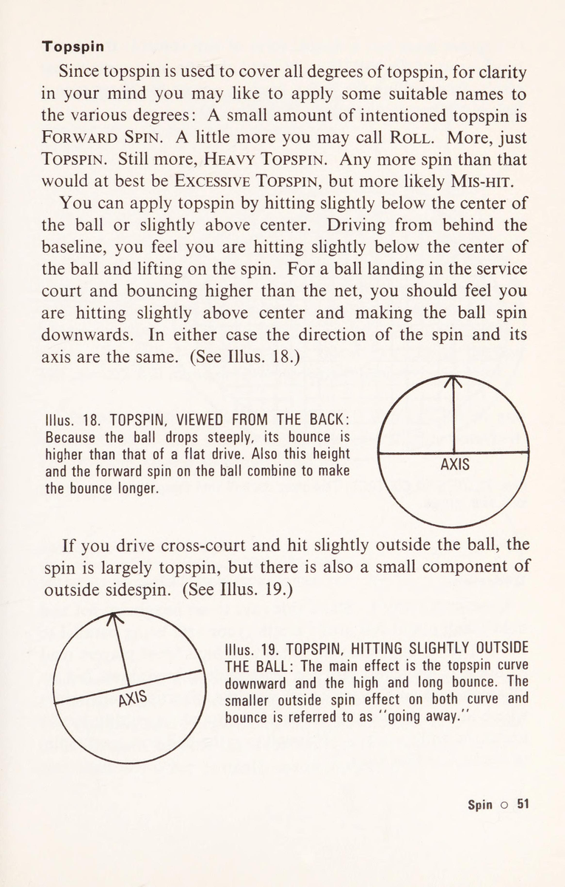
Minh họa. 27, nhưng chỉ khi đánh đủ nhanh để tránh lưới. Không ai nên căn cứ thuận tay của mình vào xoáy xuống. Nó quá dễ bị tấn công bằng cú vô lê. Ngay cả đối thủ thường là vận động viên ném bóng cũng sẽ đến lưới và ăn vào lưới. Có thể có một chính sách hợp lý là cắt và cắt đều đặn trong khi đối thủ của bạn ở đường cuối sân và vượt qua anh ta bằng các cú công bóng phẳng hoặc xoáy lên bất cứ khi nào anh ta chiếm lưới. Tuy nhiên, trên thực tế, có một số khó khăn nảy sinh. Những cú cắt và cắt của bạn cũng như độ nảy của chúng sẽ chậm hơn so với các cú đánh của anh ta, do đó bạn đặt anh ta dưới một chút áp lực và thậm chí có thể khiến anh ta thành hình. Điều này có nghĩa là anh ta có thể sẽ đánh bại bạn ngay từ vạch cuối sân. Khi anh ta chiếm được mạng, bạn có thể sẽ không tự tin khi chuyển từ những đường cắt hoặc lát dễ thực hiện của mình sang những động tác thực hiện chính xác hơn. Thay vào đó, bạn nên làm theo khuôn mẫu do hàng trăm người chơi giỏi và hàng tá nhà vô địch đặt ra: căn cứ thuận tay của bạn vào việc đánh bóng phẳng và xoáy lên, được bổ sung bởi các cú đánh xoáy xuống như yêu cầu. Đó là cách để phát triển nhiều loại nét vẽ. Lại không hài lòng với xoáy xuống và thậm chí cả phần của nó trong phạm vi cú đánh, đến bây giờ bạn có thể đã quyết định chỉ tập trung vào xoáy lên. Nếu nó mang lại cho bạn khả năng kiểm soát bóng gấp đôi so với đường cuối sân và là cách tốt nhất để vượt qua người cầm lưới, đồng thời cũng tạo ra cú đánh khó nhất để thực hiện cú vô lê, bạn có thể tự hỏi tại sao mình nên bận tâm đến bất cứ điều gì khác. Đây là mặt khác mà bạn nên tính đến. Rất dễ bị ám ảnh bởi topspin. Điều này khiến bạn áp dụng nó ngày càng nhiều. Bạn đã được cảnh báo trước đây rằng điều này sẽ dẫn đến việc đánh bóng sai. Hơn nữa, bạn có thể thấy mình làm việc chăm chỉ hơn nhiều so với mức cần thiết, việc mài giũa xoáy lên khi một cú công bóng phẳng sẽ dễ dàng hơn nhiều.
chơi. Nhiều người chơi topspin thường đưa bóng ngắn, từ đó đối thủ của họ nắm quyền kiểm soát cú đánh bóng. Khái niệm chỉ có xoáy lên có xu hướng khiến bạn rời xa nguyên tắc cơ bản là nhắm trực tiếp. Topspin đưa bóng xuống hoàn toàn ổn, nhưng kiểm soát bóng thực sự là đưa bóng đến chính xác nơi bạn muốn. Thử nghiệm trên sân sẽ sớm thuyết phục bạn rằng bạn đánh bóng càng nhiều kiểu xoáy, bao gồm cả xoáy lên, thì bạn càng ít chắc chắn về vị trí bóng sẽ rơi. Những lập luận này lại áp dụng mạnh mẽ hơn nếu bạn tưởng tượng mình muốn trở thành bậc thầy về xoáy và sử dụng phần lớn nó dưới hình thức này hay hình thức khác trong mỗi lần bạn chơi thuận tay. Bạn có thể đi đến quyết định này vì bạn không thích tự mình chơi với vòng xoáy. Cuộc thảo luận về độ xoáy này lẽ ra đã giúp bạn nhận ra rõ ràng rằng trò chơi của đối thủ, nếu nó có nhiều độ xoáy, sẽ có những khó khăn và bất lợi riêng và không tuyệt vời như bạn từng nghĩ. Bậc thầy xoay thực sự là người chơi xoay theo lệnh của mình, nhưng trò chơi của họ không chỉ phụ thuộc vào nó. Cuối cùng, trong phần về cú xoáy thuận tay này, bạn có thể quyết định một ngày nào đó bạn sẽ trở thành bậc thầy thực sự về cú xoáy, nhưng ngày đó còn rất xa và trong khi đó bạn muốn giải quyết bằng sự đơn giản hoàn toàn. Nếu bạn muốn một cú thuận tay đa năng làm cơ sở cho mình, bạn nên chọn cú thuận tay xoáy lên ở mức trung bình, được thực hiện ngay sau đỉnh của cú nảy, nơi bóng ở tốc độ chậm nhất so với đường vung vợt của bạn. Xoay trái tay Bạn không thể không nhận thấy rằng nhiều cầu thủ giỏi và cả những nhà vô địch cũng cắt các cú trái tay của họ. Điều này dường như làm cho tất cả những nhược điểm của cú đánh thuận tay trở nên vô nghĩa mà chúng ta đã thảo luận ở trên. Tuy nhiên, điều này không nhất thiết phải như vậy. Bản thân cú đánh trái tay phẳng hoặc xoáy lên là một cú đánh tốt hơn so với cú đánh được thực hiện với xoáy xuống, tuy nhiên, khi thực hiện kết hợp với một cú đánh 60 © Spin
thuận tay của người chơi, việc cắt cú trái tay có thể hiệu quả hơn. Để chống lại việc giao bóng nhanh, người chơi nhận thấy rằng họ không có đủ thời gian để thúc đẩy việc trả giao bóng ở cả thuận tay và trái tay, vì vậy họ thực hiện ở phía trái tay với một lát cắt được thực hiện nhanh hơn. Lát này sau đó trở thành trái tay cổ phiếu của họ trong mọi trường hợp. Ngoài ra, cách cầm vợt trái tay của bạn mạnh hơn cách cầm vợt thuận tay nên bạn có nhiều lực hơn về phía đó khi thực hiện cú đánh chỉ với một cú xoay ngắn. Để thực sự khiến người lưới lo lắng với một cú đánh cắt lát, bạn cần có độ chính xác và sự thay đổi tốc độ. Cách cầm vợt trái tay mạnh hơn giúp những cú đánh trái tay này dễ dàng thực hiện hơn so với cú đánh thuận tay. Nói một cách ngắn gọn và nói chung, một cầu thủ giật thuận tay và cắt bóng trái tay của mình có sức mạnh cân bằng tốt hơn so với người làm ngược lại. Cú giao bóng Không ai có thể thực hiện cú giao bóng của bạn, vì vậy về cơ bản không có sự phản đối nào đối với việc cắt một cú giao bóng. Cả hai cú giao bóng cắt và xoáy lên đều được hỗ trợ khi hạ cánh xuống sân, một khi chúng đã phá lưới một cách an toàn bằng cú xoáy mà chúng thực hiện. Vòng xoáy cắt lát làm cho quả bóng cong trong không khí, tạo cho nó một đường đi dài hơn và do đó an toàn hơn trước khi chạm vào sân. Topspin trên cú giao bóng topspin làm cho nó giảm mạnh. Lưu ý rằng kết quả chính của cả hai lần quay áp dụng cho đường đi của quả bóng trong không khí, thay vì độ nảy của nó sau khi tiếp đất. Một số bề mặt nhân tạo có ảnh hưởng đến độ nảy. Ví dụ: thảm trên sân trong nhà có thể hỗ trợ quay đến mức độ nảy đi của một quả giao bóng cắt lát có thể gây khó chịu. Bề mặt bê tông có thể làm cho cú giao bóng xoáy lên nảy quá cao đến mức không thoải mái. Tuy nhiên, trong những trường hợp bình thường, việc cắt bóng quá mức thường làm cho một cú giao bóng kém hiệu quả hơn, và xoáy lên quá mức có xu hướng làm cho một cú giao bóng như vậy trở thành cú đá hoàn toàn và không có tốc độ.
lIlus. 30. VÒNG QUAY DỊCH VỤ TRANG PURE: Điều này liên quan đến việc ném quả bóng sang một bên và do đó mang tính lý thuyết hơn là thực tế. Tuy nhiên, nó sẽ tạo ra đường cong tối đa trong không khí và đứt gãy khi nảy lên, cả hai đều biến mất. lus. 31. VÒNG QUAY DỊCH VỤ TRỰC TIẾP: Cái này có một số thành phần của xoáy lên trong đó. Đây là một lý do tại sao cú giao bóng cắt lát của bạn có xu hướng đi xuống lưới. Cái còn lại là hành động đi xuống của hầu hết các cú giao bóng. Trong giao bóng, lát cắt tương đương với độ chính xác trong vị trí và xoáy lên tương đương với độ hở lưới an toàn. Ảo tưởng. 30-32 phân tích cú giao bóng. 62 © Quay
Minh họa. 32. KICK SERVICE SPIN: Thành phần xoáy ngang làm cho bóng cong về phía bên phải của đối thủ theo kiểu giao bóng lát. Thành phần xoáy lên làm cho bóng rơi mạnh và nảy cao và dài. Hướng của vòng quay tổng hợp làm cho cú nảy bị bẻ ngược về bên trái của người nhận, nghĩa là cú nảy ngược lại với đường cong. Cú vô-lê xoáy Underspin chủ yếu được sử dụng. Nó giúp nâng những cú vô lê thấp, nó mang lại thước đo cho sự tiếp xúc lâu dài khi bạn có ít hoặc không có thời gian để nghĩ về nó, và nó phù hợp với những cú đánh có cú xoay nhẹ, chẳng hạn như cú vô lê. Xoáy trên thùy Ở đây xoáy xuống tương đương với an toàn và xoáy lên tương đương với tấn công— đối với những người chơi giỏi. Với những người thực hiện kém hơn, xoáy xuống thường có xu hướng làm cho các cú lốp bóng của họ ngắn hơn bao giờ hết trong khi các cú lốp bóng xoáy lên của họ thiên về cơ hội hơn là tấn công. Khi sử dụng xoáy xuống, điều cần thiết là phải đánh chắc chắn. Để học cách lốp bóng xoáy lên, hãy đánh bóng bằng một cú xoay chậm và có chủ ý rồi đặt xoáy lên mạnh vào nó. Hãy nắm vững điều này trước khi thực hiện một hành động ít bộc lộ ý định của bạn hơn. Những cú đập Bạn sẽ nhớ rằng trừ khi bạn đánh sai ở phần dưới trung tâm, cứ mười cú đập trượt thì có bảy hoặc nhiều hơn sẽ bị hạ gục
ĐÂY SSR SeR eee CES PRESS SERRE Sess BRBRARER DETR ReeY O". CER OS SE RESESSe Reese {RRRE SRE ARSPASSRSAe: ALORS TRRALSERERAAREs UF P oO A Illus. 33. DỊCH VỤ TRÁNH CỦA NGƯỜI TAY PHẢI VÀ TRÁI: Giao bóng từ góc rộng nhất hiện có mà người thuận tay phải có thể uốn cong bóng một cách nhạy bén như một lon thuận tay trái 64 © Spin.
vào lưới. Cú đập bóng có xu hướng đi xuống mạnh hơn bất kỳ cú đánh nào khác. Xu hướng đi xuống này là một hình thức kiểm soát, do đó độ xoáy không đóng vai trò quan trọng trong việc đập bóng. Tất nhiên, bạn có thể cắt xung quanh một cú đập để tạo góc cho nó, nhưng khi xử lý một cú lốp bóng cao, bạn sẽ cảm thấy an toàn hơn khi chơi chủ yếu bằng vợt toàn mặt, thay vì cố gắng sử dụng nhiều xoáy. Xoay người thuận tay trái Hầu hết mọi người đều tin rằng người thuận tay trái có khả năng phát triển nhiều độ xoáy và đường cong hơn người thuận tay phải. Có vẻ như vậy, nhưng người thuận tay trái có thực sự làm được hay không thì còn nghi ngờ. Ví dụ, xem Iilus. 33. Một lý do khiến người nhận thuận tay phải sẽ cảm nhận được hiệu ứng lớn hơn từ đường cong giao bóng của người thuận tay trái là vì nó đi rộng về phía trái tay của anh ta. Một lý do khác là nó đi ngược hướng với bình thường. Người thuận tay trái thường sử dụng độ xoáy nhiều hơn người thuận tay phải. Thay vì công bóng phẳng hoặc lăn nhẹ ở thuận tay và trái tay, họ thường xoáy thuận tay mạnh và cắt hoặc cắt bên trong các trái tay của họ. Về phần giao bóng, nhận thấy cú xoáy thuận tay trái của họ thường đánh lừa đối thủ nên họ thực hiện nhiều hơn. Đã học cách giao bóng từ phần sân đầu tiên (có nghĩa là đánh sang bên trái), hầu hết những người thuận tay trái giao bóng theo kiểu xoáy lên, nhưng một số chuyên thực hiện cú giao bóng cắt lát sắc nét sang phần sân bên trái. Cú đánh này đi chệch về phía trái tay của đối phương và khi nảy lên cũng phá vỡ theo cách đó. Với thông tin trong chương này, bạn nên thử nghiệm trên sân và trở thành nhà phân tích của chính mình. Sau đó, vòng quay sẽ có một số bí mật dành cho bạn và bạn có thể chơi và phản ứng với nó mà không cần suy nghĩ.
BR SiS. CBRL RB (Các loại EPS tuần SB (Sesame ws 1 \ "Wiy 0} Uado ajGue 1n09-ssoJd aAl}9ajja Ue Sey osje juauoddo inoA = 'pueyyaeq InoA 0} winjas siy} 48A09 0} UOOS 00} BAOW NOA J} ?43AYIS GITINV ‘LYOHS “ve’ SNIII 66 © Chơi trò chơi của bạn
8. Chơi trò chơi của bạn và đoán trước ý định của đối thủ
8. CHƠI TRÒ CHƠI VÀ DỰ ĐOÁN ĐỐI THỦ NẾU BẠN KHÔNG CHẮC CHẮN liệu mình có sử dụng cú đánh của mình để giành lợi thế tốt nhất hay không, rất có thể bạn sẽ không làm được. Một kiểu người sử dụng tốt chúng là người chơi không có gì nổi bật trong trò chơi của mình nhưng lại được biết đến rộng rãi như một người rất khó bị đánh bại. Một người khác là nhà vô địch địa phương với những cú giao bóng nhanh và những cú đánh mạnh mẽ khác khiến mọi người ngưỡng mộ. Tin tôi đi, anh ấy cũng biết cách sử dụng các cú đánh của mình, nếu không anh ấy sẽ không trở thành nhà vô địch địa phương. Nếu bạn không biết cách sử dụng các cú đánh của mình thì đó là một điểm yếu lớn trong trò chơi của bạn. Dịch vụ Giao bóng sâu sắc. Làm cho đường giao bóng, với sở thích trái tay rõ ràng, trở thành điểm ngắm cơ bản của bạn thay vì đường biên hấp dẫn hơn. Một cầu thủ thiếu kinh nghiệm cảm thấy anh ta có thể phạm lỗi và phạm lỗi kép nếu anh ta nhắm sâu vào vạch giao bóng, tuy nhiên, thật phi lý, anh ta không hề e ngại về việc giành được một quân át ở gần đường biên. Nếu bạn giao bóng rộng và không làm đối thủ bất ngờ, bạn sẽ để mình sơ hở. Trên thực tế, tất cả những gì bạn phải làm là đưa cho anh ta một cú thuận tay ngắn cao hơn lưới để anh ta có thể tấn công bạn như được minh họa trong Illus. 34. Tình huống này nguy hiểm hơn ở phần sân bên phải, đặc biệt nếu bạn cố gắng có được góc nhìn tốt hơn bằng cách giao bóng tốt từ điểm giữa. Chơi trò chơi của bạn o 67
Minh họa. 35. PHỤC VỤ SÂU: Cú đánh của đối thủ được thực hiện từ xa hơn và cho bạn nhiều thời gian hơn.
Giao bóng từ gần điểm giữa và chạm bóng trong khoảng 18 inch tính từ đường giao bóng là những cách tốt hơn để sử dụng cú giao bóng của bạn. (Xem Minh họa 35.) Nếu bạn muốn thực hiện một quả giao bóng trên lưới, hãy quyết định thực hiện nó trước khi giao bóng. Điều này làm cho việc tạm ứng ròng mượt mà và cân bằng hơn. Trả giao bóng Chuẩn bị nhận quả giao bóng đầu tiên, mục tiêu tinh thần của bạn là phải nhanh chóng để bằng cách nào đó bạn sẽ lấy lại được bóng. Thông thường đây không phải là lúc để nghĩ đến việc chơi một cú đánh bóng dài. Đối với cú giao bóng thứ hai, mục tiêu của bạn là tiếp quản. Trả lại Bali sâu, và trong hầu hết các trường hợp, bạn sẽ tiếp quản. Ít nhất bạn sẽ vô hiệu hóa được lợi thế của máy chủ. Tập hợp Đừng lướt bóng thấp qua lưới—nó sẽ ngắn. Đánh tốt qua lưới không phải là trò chơi dành cho người mới bắt đầu như bạn có thể nghĩ. Khi ngồi trên khán đài phía trên và phía sau sân, bạn sẽ có ấn tượng rằng những cầu thủ giỏi lái mọi quả bóng xuống thấp, nhưng nếu bạn ngồi sang một bên ở mặt sân, bạn sẽ thấy bóng đi qua lưới tới 4 feet và đôi khi hơn. Đừng đánh thẳng vào đối thủ của bạn—điều đó khiến anh ta cảm thấy ổn định. Sử dụng cả hai góc sâu, hoặc nếu không, có lẽ anh ta sẽ thực hiện nhiều cú trái tay hơn và sau đó thử đánh chéo bàn. Anh ta sẽ gặp nhiều rắc rối hơn với cú thuận tay của mình nếu bạn không cho phép anh ta chơi nó một cách bình tĩnh. Nếu đối thủ của bạn không có ý định chiếm lưới, có thể là do anh ta thiếu tự tin ở đó. Thực hiện một vài cú đánh ngắn để đưa anh ta vào lưới và bạn có thể thấy anh ta không phải là một tay chuyền bóng. Những người chơi như vậy cũng thường dễ dàng lốp bóng. Chơi trò chơi của bạn o 69
Lob Trong hầu hết các trường hợp, hãy nhắm vào cú trái tay của đối thủ, nơi anh ta có ít tầm với hơn. Sau cú lốp bóng yếu đầu tiên của bạn, hãy hứa sẽ ủng hộ một tổ chức từ thiện xứng đáng nếu bạn lốp bóng ngắn lần nữa trong thời gian còn lại trong ngày. Cú đánh tiếp cận Chỉ khi cú thuận tay của đối thủ là vô vọng nếu bạn hướng nhiều cú đánh tiếp cận về phía đó. Thông thường cú thuận tay của anh ấy tốt hơn thế, vì vậy hãy thực hiện những cú đánh tiếp cận của bạn về phía sau tay anh ấy. Điều này áp dụng ngay cả khi cú đánh trái tay của đối thủ là cú đánh tốt hơn của anh ta. Mọi người có khả năng làm được nhiều hơn thế với cú thuận tay của họ. Nó tự do hơn, nhanh hơn và hướng đi của nó có thể được thay đổi sau này. Nó có thể không an toàn bằng cú trái tay của người chơi, nhưng nó có thể nguy hiểm hơn như một cú chuyền bóng. Đừng tiếp cận từ một quả bóng đã rơi sâu vào sân của bạn. Cú đánh của bạn sẽ dài và bạn sẽ cho đối thủ quá nhiều thời gian. Đến với Net Đừng vào quá xa để bạn có thể dễ dàng bị lạm dụng. Giữ một mái nhà trên ngôi nhà của bạn. Đôi khi, bạn hãy tiến lên theo hai giai đoạn, bắt đầu bằng cú vô lê đầu tiên từ gần vạch giao bóng (đánh sâu) và cú vô lê thứ hai (thường là cú cuối cùng) khi bạn áp sát. Hãy luôn tưởng tượng mình đang lao vào lưới hoặc chiếm lưới — đừng bao giờ lao vào lưới. Trước khi thực hiện cú vô lê, hãy tạm dừng. Đừng vô lê trên đường chạy chết. Luôn thực hiện cú vô-lê đầu tiên một cách đều đặn. Trò chơi trở nên dễ dàng hơn sau đó. 70 © Chơi trò chơi của bạn
Minh họa. 36. PHA LẠI TRỞ LẠI ĐỂ ĐÁNH MỘT LOB SÂU VỀ PHÍA TRÁI CỦA BẠN: Cú đập của bạn sẽ an toàn hơn nếu nhắm đúng mục tiêu như minh họa. Mặt vợt của bạn thoáng hơn (vuông góc hơn với bóng). Bạn có nhiều sân hơn để đánh vào phần thấp của lưới. Đập bóng Trò chơi trở nên dễ dàng hơn sau cú đập bóng đầu tiên, hơn là với cú vô lê. Biết được điều này là động lực lớn để bạn chơi cú đập bóng đầu tiên một cách an toàn. Tuy nhiên, hãy chơi đủ mạnh để buộc đối thủ của bạn lốp bóng lần nữa. Cú lốp bóng thứ hai (bắt buộc) của anh ấy hiếm khi tốt bằng cú lốp bóng đầu tiên. Một cú lốp bóng sâu về phía trái tay của bạn là cú lốp bóng khó nhất mà bạn có thể mong đợi. Nếu nó đủ cao để bạn có thời gian di chuyển sang trái và thực hiện cú đập thuận tay, bạn nên sử dụng cú đánh này, thay vì chỉ thực hiện một cú vô lê trái tay phòng thủ cao. Ngược lại theo cách này về phía trái tay của bạn Chơi trò chơi của bạn © 71
bên lề, sẽ rất rủi ro nếu cố gắng thực hiện một cú đập bóng cắt xuống đường biên thuận tay (thuận tay phải) của đối thủ. Bạn đang nhắm mục tiêu với mặt vợt hẹp và có thể đánh sai. Ngoài ra, bạn đang nhắm tới một khu vực hẹp và có thể bỏ lỡ nó. Cú cắt của bạn sẽ làm cong quả bóng, sao cho con hẻm chứ không phải sân sẽ là mục tiêu tự nhiên của nó. Ngược lại, xem Minh họa. 36. Chơi theo kiểu thoải mái hết lần này đến lần khác chơi trò chơi của bạn một cách có ý thức. Ý thức chung sẽ chỉ đạo một sự thay đổi chỗ này chỗ kia, nhưng điều này sẽ không làm xáo trộn khuôn mẫu thoải mái mà bạn đang sống. Nghe có vẻ dễ dàng quá, lấp lánh. Được rồi, kiểm tra nó. Huấn luyện viên có thể huấn luyện bạn, bạn bè có thể luyện tập cùng bạn, những cầu thủ có kinh nghiệm có thể cho bạn lời khuyên, những người thân có thiện chí có thể can thiệp, và hơn nữa, bạn là nhà phân tích của chính mình. Có vẻ như đó là một đội đầy đủ, nhưng lúc nào cũng có một thành viên khác, nếu bạn chú ý đến anh ấy, sẽ đưa ra những minh chứng thực tế cho bạn. Đó là đối thủ của bạn. Lần tới khi bạn chơi, hãy kiểm tra anh ấy. Nếu anh ta là người luôn đánh bại bạn mà không có cú đánh nào tốt hơn bạn, bạn sẽ nhận ra rằng trò chơi của anh ta được hình thành dựa trên khuôn mẫu mà chúng ta đã thảo luận. Dự đoán Xem bóng, bạn vẫn có thể nhìn thấy đối thủ của mình. Họ ở bên nhau trong một bức tranh tâm trí ở đầu bên kia sân. Đối thủ của bạn không thể che giấu ý định của mình một cách nhất quán hơn bạn. Quá tập trung vào việc này, cả hai bạn sẽ không thể chơi đúng cách. Theo quan điểm của bạn thì có rất nhiều điều để xem. Tuy nhiên, bước đầu tiên trong dự đoán là chuyển động của chính bạn: ngay sau khi bạn thực hiện cú đánh của mình, hãy bắt đầu di chuyển. 72 © Dự đoán
Nếu bạn nghi ngờ sự khôn ngoan của điều này, vì dù sao thì bạn cũng có thể đang ở vị trí tốt nhất, hãy thử đánh một hoặc hai cú đánh và giữ nguyên vị trí cho đến khi bóng hạ cánh. Kết quả là bạn sẽ thấy mình vội vã bắn tiếp theo, và điều đó ngược lại với dự đoán. Sau khi đánh từ gần đường biên, di chuyển về phía giữa. Sau khi đánh sâu một trong các cú đánh của bạn, hãy sẵn sàng di chuyển vào sâu hơn một chút, vì cú đánh của đối thủ có thể sẽ ngắn hơn bình thường. Hãy đặt mình vào vị trí trung tâm của những lợi nhuận có thể đạt được. Lấy cú vô-lê làm ví dụ. (Xem Minh họa 37 ở trang tiếp theo.) Nếu đối thủ của bạn hạ đầu vợt xuống thấp hơn mức để thực hiện một cú công bóng, và tất cả đều không thể giúp trông như thể anh ta sắp lốp bóng, bạn nên bắt đầu thả lỏng ngay lập tức để che nó. Nếu bạn đợi cho đến khi anh ta đánh bóng, nó sẽ bay qua đầu bạn ngoài tầm với. Sự dự đoán, chứ không phải chiều cao, quyết định liệu một cầu thủ có thể lốp bóng hay dễ dàng lốp bóng qua. Các cú thuận tay dọc sân và dọc biên của người chơi trông khác nhau, và sự khác biệt này có thể được nhìn thấy trước khi anh ta đánh bóng - nghĩa là, chúng được thể hiện rõ ràng trong cách anh ta tự mình thiết lập và đánh bóng về phía sau. Hãy theo dõi đối thủ luyện tập tiếp theo của bạn và tự mình chứng kiến. Sự khác biệt thường rõ ràng hơn với cú trái tay. Đối với những cầu thủ đánh bóng bên ngoài để thực hiện cú trái tay chéo sân và sử dụng xoáy xuống bên trong để nhắm dọc theo đường biên, việc đoán trước hướng đánh của họ cũng dễ như rơi khỏi một khúc gỗ. Trong mọi trường hợp, bạn có thể đoán trước, di chuyển trước khi bóng được đánh. Nhiều người chơi ném bóng qua đầu để giao bóng gốc của họ về phía trái tay của bạn. Cố gắng tạo ra một cú át chủ bài bất ngờ bằng cú thuận tay của bạn ở phần sân bên phải, họ ném bóng xa hơn về phía bên phải của họ. Dự đoán trước được điều này, bạn có nhiều khả năng ghi được bàn thắng chung cuộc hơn là nhận được quân át. Những tín hiệu dự đoán được đưa ra suốt cả ngày để bạn xem. Hãy trau dồi để nhìn thấy chúng cho đến khi bạn không thể không nhìn thấy chúng. Dự đoán © 73
Cố gắng kết hợp mọi thứ thành một mô hình mượt mà: các cú đánh của bạn, cách sử dụng chúng, dự đoán sơ bộ của bạn về việc di chuyển đến tâm của các cú trả bóng có thể xảy ra ngay sau khi bạn đánh bóng, dự đoán cuối cùng của bạn về việc di chuyển trước khi đối thủ đánh bóng. (Trang đối diện) Minh họa. 37. TRUNG TÂM CÓ THỂ TRẢ LẠI: Ngay sau khi thực hiện một cú đánh vào giữa sân đối phương hoặc sang một bên, người thực hiện cú vô lê phải đặt mình ở vị trí trung tâm của những cú trả bóng có thể xảy ra. Kinh nghiệm sẽ sớm giúp bạn trở thành người đánh giá tốt vị trí này. Dự đoán o 75
9. Chiến thuật đối đầu: Khai thác điểm yếu & làm chủ đường chéo
9. CHIẾN THUẬT CƠ SỞ CỦA CHIẾN THUẬT là đem sức mạnh của mình đè lên điểm yếu của đối thủ. Nếu cú đánh trái tay của anh ta là cú đánh tệ nhất trên sân: bạn hãy chơi theo cú đánh đó. Nếu anh ta thất thường còn bạn thì ổn định: bạn giữ bóng trong cuộc và do đó cho anh ta cơ hội tối đa để phạm lỗi. Nếu ngược lại: bạn giữ bóng cách xa anh ta để tạo sơ hở cho chính mình. Nếu anh ta là người chuyền bóng: bạn giữ bóng càng sâu càng tốt để hạn chế cơ hội thực hiện các cú đánh tiếp cận của anh ta. Nếu bạn là người bắt vô lê: bạn thường xuyên thực hiện giao bóng và trả giao bóng, và bất cứ khi nào có thể, bạn rút ngắn các cú đánh của anh ta bằng cách thực hiện chúng ở điểm cao và đôi khi là toàn bộ để thực hiện các cú vô lê dài. Bạn biết rõ sức mạnh của chính mình. Đối thủ của bạn, trừ khi bạn vượt trội hơn, sẽ bộc lộ điểm yếu của anh ta. Nếu bạn chỉ nhìn thấy họ vào cuối trận đấu thì có thể đã quá muộn, nhưng đừng tuyệt vọng. Bạn sẽ biết chúng lần sau vì những người chơi quần vợt hầu hết đều nhớ lại các trận đấu của đối thủ. Ngoài ra, bạn sẽ phát hiện ra điểm yếu sớm hơn với mỗi đối thủ mà bạn chơi. Bạn có thể nhận thấy một cú trái tay yếu hoặc một cú thuận tay hoang dã hoặc một cú vô lê không chắc chắn ngay từ trong giai đoạn khởi động, vì vậy hãy tìm kiếm chúng. Việc khởi động có thể cho thấy rằng đối thủ của bạn là một người đánh bóng tự tin khi đối phó với những quả bóng cao, đồng thời anh ta cũng đánh những cú thuận tay và trái tay có độ cao bình thường với xoáy lên mạnh, chạm bóng xa hơn đáng kể so với hông trước của anh ta. Anh ấy là một cầu thủ có phong cách phương Tây. Chiến thuật của bạn khi trận đấu bắt đầu sẽ là chơi 76 © Tactics
rộng về phía anh ấy, giữ độ nảy ở mức thấp nếu bạn có thể. Điểm yếu lớn nhất của anh ấy sẽ là trước những đường bóng mà bạn có thể nhận được từ phía sau anh ấy. Bạn biết bản thân mình cũng có điểm yếu, vì vậy hãy tự tin rằng đối thủ của bạn cũng có điểm yếu. Sẽ là không thực tế nếu bạn nghĩ khác về một cầu thủ gần giống với tiêu chuẩn của bạn. Các cầu thủ Davis Cup đều có điểm yếu. Họ là những cầu thủ khá cao cấp và phải có một cầu thủ Davis Cup khác mới khai thác được họ, nhưng điều đó không ngăn cản bạn cố gắng phát hiện ra họ để tự học hỏi khi xem những cầu thủ này. Rõ ràng, phần khởi động sẽ cho thấy đối thủ của bạn thuận tay trái hay thuận tay hai tay. Nếu anh ta thuận tay trái, hãy để ý xem liệu anh ta có một cú thuận tay xoáy lên mạnh mẽ điển hình và cú đánh trái đầu vợt thả xuống mà anh ta trượt về phía trái tay phải của bạn hay không. Nếu vậy, bạn nên cẩn thận với cú thuận tay của anh ta và khi lấy lưới từ trái tay của anh ta, hai cú đánh ưa thích của anh ta sẽ là một đường chuyền dọc và một cú lốp bóng. Đối với người bắn bằng hai tay, bạn có thể mong đợi nó chắc chắn nhưng tầm với bị hạn chế, vì vậy ngay lập tức chiến thuật của bạn sẽ là cố gắng dàn trải anh ta ra. Bạn có thể thấy sự hiểu biết về chiến thuật mang lại cho bạn sự tự tin như thế nào. Giả sử các cú đánh của đối thủ không cho bạn thấy một điểm yếu nào. Anh ấy đánh mượt mà từ thuận tay và trái tay ở tốc độ trung bình, anh ấy thực hiện cú vô lê đẹp mắt và một số cú giao bóng luyện tập của anh ấy trông có vẻ bình tĩnh và có kiểm soát. Hãy yên tâm, vì trừ khi anh ấy không cùng lớp với bạn, bạn sẽ chơi tốt với anh ấy. Những cú đánh của anh ta sẽ không chìm hay đá hay trượt hay trượt và hơn thế nữa, anh ta có thể là một người hoàn toàn xa lạ với nghệ thuật tranh giành điểm nhẹ nhàng. Bạn sẽ đánh vào tâm vợt nhiều hơn bình thường. Trong khi thực hiện điều đó, bạn sẽ kết hợp trò chơi của mình nhiều nhất có thể để cố gắng lôi kéo anh ấy. Chiến thuật không phải lúc nào cũng giành chiến thắng cho bạn, nhưng ít nhất chúng khiến bạn nghĩ mình là người chiến thắng và đó là một khởi đầu tốt. Nếu muốn thấy chiến thuật được áp dụng ở đẳng cấp cao bạn nên xem trận chung kết của một giải đấu lớn. Thỉnh thoảng họ
được áp dụng một cách cứng nhắc đến mức trận đấu có thể trở nên đáng thất vọng nếu xét theo quan điểm đấu gậy. Một cầu thủ có cú thuận tay tuyệt vời mà bạn đến xem có thể khó có cơ hội sử dụng nó. Trở lại với cấp độ thông thường hơn, một trận chiến chiến thuật thú vị thường diễn ra khi hai kiểu người chơi tương phản gặp nhau. Người chơi A là người thuận tay phải với sức mạnh thuận tay và trái tay cân bằng. Người chơi B là người thuận tay trái với cú thuận tay xoáy lên mạnh mẽ và cú đánh trái tay phòng thủ chặt chẽ. Họ đang thi đấu tập luyện dưới sự giám sát của huấn luyện viên. Đây là cách anh ấy sẽ ra lệnh cho chiến thuật của họ. Người thuận tay trái, hãy sử dụng cú thuận tay đó bất cứ khi nào bạn có thể. Chạy vòng quanh mọi trái tay bạn có thể. Trong một trận đấu đừng ngần ngại về điều này. Người thuận tay phải, hãy đánh trái tay đó. Người thuận tay trái, giữ xa hơn. Hãy quên đi tâm điểm có thể trả bóng trong giây lát và bảo vệ cú đánh trái tay đó của bạn. Người thuận tay phải, chơi gần đường trái tay hơn. Người thuận tay trái, bây giờ anh ấy đang trở nên chậm rãi và cẩn thận. Bạn thậm chí có thể tiến gần hơn đến đường trái tay của mình và thực hiện các cú thuận tay từ các cú đánh của anh ấy. Người thuận tay phải, coi chừng! Anh ta đang dụ dỗ bạn đánh quá gần đường trái tay và chẳng mấy chốc bạn sẽ hạ gục họ trong con hẻm và bị mất điểm. Cách tốt nhất để có được cú trái tay của ata người là chơi thuận tay trước, buộc anh ta phải bộc lộ nhiều mặt sân trái tay rồi sau đó đánh về phía trái tay của anh ta và chiếm lưới. Hãy nhìn nhanh vào Illus. 38. Nhưng, người thuận tay trái, nếu anh ta không đánh cú đánh đầu tiên vào tay bạn đủ sâu thì vị trí đó sẽ khiến bạn rơi xuống đất. Bạn có bóng thuận tay, tạo cơ hội cho bạn chủ động và sau đó đưa bóng vào lưới. Bạn có thể chơi một trong hai cú thuận tay yêu thích của mình mà bạn biết mà không cần nhìn là những cú được hiển thị trong Illus. 39 ở trang tiếp theo. Người thuận tay phải, bạn đã nghe thấy điều đó. Vì vậy, hãy thực hiện các cú đánh của bạn đủ sâu để ngăn anh ta chịu trách nhiệm. Đối với hầu hết những người thuận tay phải, việc thực hiện cú đánh sâu đầu tiên này vào phía trước của đối thủ sẽ dễ dàng hơn.
9egnQnee 2°@eseo0e Oe °e00008 0@00°000 000000°%8 GOOUSROe VegRGeaG FSHRHHOR GGSRGGOG 8OQNGGeS 8@0eG008 '@eaeeas 0.680000 ee. 200. 0,60. cee °60 ee60 88s 08000c%e 800000. esceseoe BEHROGHe eaege0ee eeccesae aQo0Geae8 ere80ee080 ee *ee0e0e 6009.0e00 eecse°%ee OOa lus. 39. HAI CÚ ĐÁNH YÊU THÍCH CỦA NGƯỜI TAY TRÁI ĐIỂN HÌNH: Thông thường, khi học cách chơi từ sân đôi bên trái, những người thuận tay trái phát triển một cú công bóng thuận tay xoáy lên cực kỳ tốt. Nó gây khó chịu cho người thuận tay phải, ở nội dung đánh đơn hoặc đánh đôi. 80 © Chiến thuật
tay chống lại người thuận tay trái hơn là chống lại người thuận tay phải. Cú thuận tay của bạn đi dọc theo đường biên và cú trái tay của bạn đi chéo sân theo một đường chéo dài. Bạn có thể có được độ sâu tốt một cách tự nhiên với cả hai bức ảnh này. Người thuận tay phải, bây giờ bạn có thể chọc thủng cú trái tay của anh ta, hãy theo vào lưới. Người thuận tay trái, đừng để anh ta ghìm trái tay của bạn xuống. Tấn công mạnh hơn bằng cú thuận tay của bạn và bạn giành được Met.24 Bây giờ hãy tưởng tượng một trận đấu thực sự giữa hai người chơi như vậy gặp nhau lần đầu tiên. Nếu cả hai đều biết những chiến thuật này, họ sẽ tham gia một trận chiến hoàng gia. Nếu một người không làm được, người kia sẽ thắng dễ dàng. Nếu người thuận tay trái không biết công việc kinh doanh của mình thì anh chàng tội nghiệp này có thể quyết định rằng anh ta sẽ không tham gia đánh đơn vì trái tay của anh ta rất dễ bị tổn thương. Nếu là người thuận tay phải, bạn có thể sẽ nghe thấy anh ấy nói một cách chán ghét rằng dù sao thì anh ấy cũng không bao giờ có thể chơi được người thuận tay trái. Đối thủ cân bằng Đây là một trường hợp thông thường hơn: một trận đấu giữa hai người chơi thuận tay phải, mỗi người khá cân bằng về sức mạnh giữa thuận tay và trái tay. Trong phần khởi động, cả hai có vẻ ngang bằng nhau về lối đánh, tốc độ và kiểm soát bóng, tuy nhiên trong suốt trận đấu tiếp theo, người này chạy người kia một cách thô bạo. Anh ta khiến đối thủ đuổi theo từ bên này sang bên kia trong khi bản thân anh ta dường như chỉ di chuyển được vài bước. Theo dõi trận đấu từ phía trên một đầu sân, người chiến thắng trông như thể anh ta đang ở bản lề của một con lắc, làm đối thủ lắc lư từ bên này sang bên kia. Cả hai cầu thủ đều đánh bóng tốt. Nó diễn ra như thế nào? Nó xảy ra bởi vì một người chơi đang để người kia khai thác các đường chéo dài. (Xem Minh họa 40 ở trang tiếp theo.) Để trả lời cho cú tấn công đầu tiên của Cầu thủ A, B lẽ ra phải trả bóng ít nhiều dọc theo hướng đường biên của nó.
Đèn LED A2 Al, | Bebbubasaesaer 2asnees iesaesaee,cessezeeraeri Illus. 40. ĐƯỜNG CHÉO: Cầu thủ A thực hiện cú tấn công (1) vào góc thuận tay. Player B returns (2) down the line. Người chơi A chơi (3) một đường chéo dài xuyên thấu và B bắt đầu cuộc rượt đuổi của mình. Nếu Người chơi B đánh trái tay của mình dọc theo đường thuận tay của A thì anh ta đang mời một cú thuận tay chéo dài khác tới góc thuận tay của mình. Here we leave him—in perpetual motion. bay, nhưng chậm hơn và ở trên lưới nhiều, để bản thân có nhiều thời gian lấy lại vị trí giữa đường cuối sân. Suy nghĩ của anh ấy khi đánh xuống vạch là anh ấy đang chơi trái tay của đối thủ. Sai lầm của anh là không biết rằng ở vị trí này 82 © Tactics
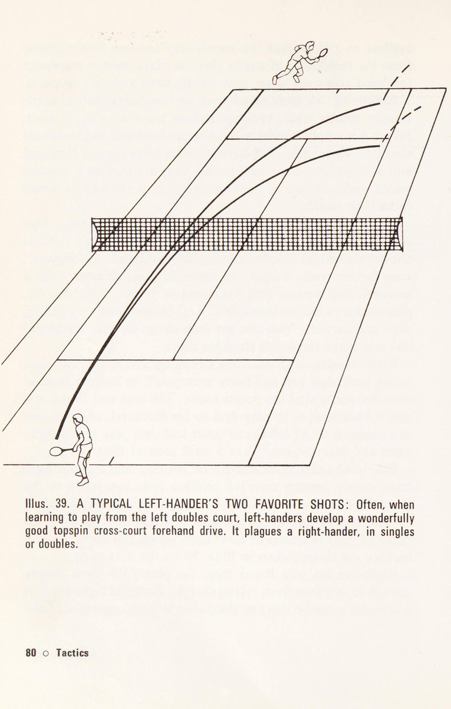
cú trái tay của đối thủ ở vị trí tốt hơn để tung ra một cú đánh hiệu quả hơn cú thuận tay mạnh hơn một chút của anh ta có thể có. Đã phạm một sai lầm, không có gì chắc chắn rằng B sẽ rút ra bài học nhanh chóng và trả đường chéo của A theo đúng cách, tức là cao, sâu và khoảng giữa điểm giữa của A và đường biên trái tay của anh ta. Theo đuổi một đường chéo rộng và sâu, việc đánh xuống đường biên sẽ dễ dàng hơn là nỗ lực nhiều hơn để tiến xa hơn về phía sau quả bóng và đánh trả nó theo hướng chéo sân. Vì vậy, trừ khi B biết chút ít về chiến thuật, anh ta rất dễ rơi vào vòng xoáy của quả lắc lắc. Hãy nhớ những đường chéo này bằng cách coi chúng như những đường chéo chết người. Hãy sử dụng chúng khi bạn có cơ hội. Bạn sẽ có rất nhiều cơ hội chống lại những người chơi ưa thích những cú đánh dọc biên từ cả thuận tay và trái tay. Thường thì bạn có thể nhận ra chúng khi khởi động. Một manh mối gần như chắc chắn là liệu cú thuận tay và trái tay cơ bản của họ có phải là các cú công bóng xoáy xuống hay không. Xem Minh họa. 24 và Trình diễn 4 một lần nữa. Đối đầu với một người thực hiện cú đánh bình thường hơn, bạn có thể dụ dỗ anh ta đặt bạn vào một vị trí để chơi một đường chéo chết người. (Xem Minh họa 41 ở trang tiếp theo.) Chiến thuật lưới Nếu bạn có một cú giao bóng mà đối thủ của bạn không thể xử lý được, do sức mạnh, độ xoắn hoặc vị trí của nó hoặc bất cứ điều gì khác, hãy luôn đến lưới phía sau nó. Nếu các cú đánh chạm đất của bạn không phù hợp với đối thủ, hãy đặt cược trò chơi của bạn vào thời điểm hiện tại bằng một cuộc tấn công lưới - sau đó bỏ đi và thực hiện các cú đánh chạm đất đó. Nếu bạn có một trận đấu công bằng hoặc tốt, hãy chơi quần vợt toàn sân. Trên thực tế, điều này có nghĩa là bạn luôn săn lùng một vị trí lưới mang lại cho bạn cơ hội giành điểm rõ ràng là cao hơn cả. This is sound tennis.
LÀ BSSSSSRRSSSEADCOSSSSS! SSUSSSS LSHSSSSSSSSSeeRe8eCe88' (SESS SSS8E8888. 2eeeenge TTTIIIIIIBIIII IIIT iit TIrISIi IIS IIT TTT Tih USSSESEROTSSSUSSEGE2823808808 Minh họa. 41. TẠO MỘT CHÉO: Bóng hơi hướng về phía trái tay của bạn. Bạn bước xung quanh và thực hiện cú công bóng thuận tay (1) về phía trái tay của anh ta (Đừng đánh vào góc thuận tay của anh ta, nếu không anh ta sẽ có một đường chéo thuận tay tới góc thuận tay của bạn.) Khi nhìn thấy phía thuận tay hơi cởi mở của bạn, anh ta sẽ chơi (2) dọc theo đường biên. Ngay lập tức, bạn có một cú thuận tay chéo (3) dài tới góc thuận tay mở ra cho bạn. Nhân tiện, hãy dành thời gian thực hiện cú đánh tiếp cận và thực hiện cú đánh thích hợp. Nhiều cầu thủ vội vàng thực hiện cú đánh tiếp cận, đưa bóng ra xa phía trước cơ thể và không nhận được lực cũng như ít hướng từ một quả bóng dễ dàng mà họ được giao.
lỗi. Thực hiện cú backswing ngắn hơn bình thường nhưng thực hiện cú đánh chắc chắn. Bề mặt sân Phần lớn được tạo ra từ sự thay đổi chiến thuật của các nhà vô địch để đáp ứng các bề mặt sân khác nhau: họ chơi quần vợt toàn sân trên sân đất nện và xi măng, tựa lưng trên bề mặt như nhựa đường gồ ghề, giúp làm chậm độ nảy của bóng và đi vào lưới trên hầu hết mọi quả bóng trên cỏ, bê tông sáng bóng và gỗ hoặc thảm trong nhà. Những người chơi nhỏ hơn không nên bị chi phối một cách thiếu linh hoạt bởi những chiến thuật này. Theo hướng dẫn chung, bề mặt chậm hơn giúp người lái xe có cơ hội vượt qua người lưới tốt hơn, nhưng nếu bạn cho đối thủ của mình một cú đánh vụng về, chẳng hạn như đưa bóng ra sau anh ta, bạn không nên ức chế nhất. Cho dù mặt sân có chậm đến đâu, bạn cũng nên đưa lưới và bắt vô lê. Tương tự, nếu bạn chơi trên một bề mặt rất nhanh, việc đưa bóng ngắn vào lưới vẫn là hành động tự sát. Cỏ có thể là một bề mặt nhanh nếu được chơi bởi những người chơi nhanh. Mặt khác, nó không nhanh như những người không chơi nhiều về nó thường tin tưởng. Nếu bạn không quen với sân cỏ, lời khuyên tốt nhất liên quan đến kỹ thuật đánh bóng hơn là chiến thuật. Đừng đứng thẳng như cột điện báo. Bắt bóng tốt bằng cách uốn cong đầu gối của bạn một cách mạnh mẽ. Điều này giúp bạn hòa hợp với lối chơi trên sân cỏ và ngăn cản việc bạn trở nên yếu đuối một cách vô vọng khi chơi trên sân cỏ. Chiến thuật tính điểm Tất cả các điểm đều có giá trị, ngay cả điểm đầu tiên, điểm ở xa trò chơi nhất. Tuy nhiên, bạn nên chơi chúng theo cách khác, có chiến thuật. Về điểm trò chơi và điểm cách xa trò chơi với sự chênh lệch về điểm số chỉ một điểm hoặc không có chênh lệch (30-15, 15-30, 30-tất cả, deuce) không cho đối thủ của bạn cơ hội giành chiến thắng chỉ bằng một cú đánh. Nếu anh ta có một cú đánh nguy hiểm, hãy tránh xa nó. Đừng mạo hiểm với một cú đánh rơi
bạn có thể bắn trượt hoặc anh ta có thể chạm tới. Nếu cú giao bóng thứ hai của bạn yếu, đây không phải là lúc để cố gắng thực hiện cú giao bóng chủ đạo mà là lúc để thực hiện cú giao bóng đầu tiên trung bình. Điều này tạo cơ sở để làm theo, thay vì không biết phải làm gì trước khi bắt đầu. Đừng bao giờ thay đổi một trò chơi đang thắng Sẽ là báng bổ khi nói về chiến thuật mà không đưa vào khẩu hiệu chủ đạo, ““‘Không bao giờ thay đổi một trò chơi thắng, luôn thay đổi một trò chơi thua”. Nếu bạn không biết điều này, rất có thể bạn sẽ làm điều ngược lại trong cả hai trường hợp: chiến thắng, luôn có sự cám dỗ để làm theo cách khác; thua, bạn sợ phải thay đổi và thua nặng hơn. Đừng từ bỏ chiến thuật khiến đối thủ lo lắng chỉ vì bạn mắc sai lầm trong việc dứt điểm. Điều này nghe có vẻ hiển nhiên, nhưng nó xảy ra nhiều lần với một cầu thủ luôn để mình trở nên bối rối. Anh ấy sắp xếp mọi thứ, ghi bàn, nhận cú vô-lê dễ dàng mà anh ấy đã nỗ lực đạt được – và lại sút trượt. Điều này lại xảy ra ngay sau đó. Sau đó, anh ấy tránh xa lưới vì quyết định rằng mình sẽ thực hiện cú vô lê vào ngày hôm đó. Nếu lý do của anh ta là anh ta đang thay đổi một trò chơi đang thua thì chắc chắn anh ta đang bối rối. Tuy nhiên, công bằng mà nói với người chơi thì đây là một trường hợp cực đoan. Nhiều khả năng là anh ta sẽ từ bỏ việc lên lưới sau khi bỏ lỡ một vài cú đập bóng, và không muốn mạo hiểm phải thực hiện một cú đập khác. Đó là câu chuyện cũ, rằng đằng sau mọi thứ bạn đều cần những nét âm thanh. 86 © Chiến thuật
10. Ngụy biện trong Match Play: Kỹ thuật gỡ rối dây thần kinh
10. MATCH PLAY FALLACY NẾU MATCH PLAY là điểm yếu của bạn, rất có thể bạn chắc chắn rằng đó là sự lo lắng, nhưng cũng có thể đó là những cú đánh không tốt. Các triệu chứng của bạn là: bạn cảm thấy không thực, choáng váng, ốm yếu, quá yếu để có thể đánh bất cứ thứ gì; bạn ở phía trước, nhưng sau đó bị ngã; bạn đã chơi một hiệp với một người bạn vào ngày hôm sau và hầu như không bỏ lỡ một quả bóng nào. Kết luận của bạn: không có tính khí phù hợp và bạn sẽ không bao giờ có. Đừng nghĩ bạn là Robinson Crusoe, người duy nhất ở đây. Những điều tương tự và hơn thế nữa đã xảy ra với hàng nghìn người trong lịch sử hàng trăm năm của quần vợt. Họ chỉ xác nhận rằng bạn là con người và tất cả hệ thống của bạn đều hoạt động bình thường. Cho đến khi bạn hiểu được điều gì đó về thi đấu, bạn có thể cảm thấy như vậy ở mọi lứa tuổi và duy trì cảm giác đó trong suốt quãng đời còn lại trong quần vợt của mình. Ngay khi bạn hiểu cách chơi trận đấu, bạn sẽ bắt đầu thay đổi để tốt hơn. m Nét vẽ của bạn chưa đủ chắc chắn. Họ có thể giỏi mà không gặp áp lực, nhưng không đủ giỏi dưới áp lực thực sự muốn chiến thắng. m= Chưa có ai thấy một tay đấu thủ nào mà không có ít nhất một đòn đánh hay, ngay cả khi không có gì đẹp đẽ. Không có người chơi giỏi nào lại không thể dựa vào bất kỳ cú đánh nào của mình và không có niềm tin vào một số cú đánh đó. m Hãy chỉ trích những cú đánh của bạn hoặc bất kỳ cú đánh nào trong số đó, không phải của chính bạn. Trận đấu o 87
Khi bạn thực sự tự tin vào cú đánh này đến cú đánh khác, tính khí thi đấu của bạn sẽ phản ứng tương ứng. mw Bạn có thể trực tiếp thực hiện các nét vẽ của mình, nhưng bạn có thể làm điều tương tự với tính khí của mình không? Tính khí của bạn sẽ bị ảnh hưởng bởi những cú đánh được cải thiện của bạn. Sự khao khát chiến thắng của bạn sẽ mang lại quyết tâm cùng với nó. Khuyến nghị m Hãy coi mỗi trận đấu như một cuộc thử nghiệm khác cho cú đánh của bạn. Khi chúng hoạt động, hãy sử dụng chúng một cách chiến thuật. Khi bạn thua, khác hẳn với việc đối thủ thực sự đánh bại bạn, hãy đổ lỗi cho một phần nào đó trong trò chơi của bạn thay vì bản thân bạn và cố gắng khắc phục nó. m Khi bạn thực sự bị đánh bại, hãy tìm hiểu điểm mạnh của đối thủ. Đây là nơi bạn đạt được tiến bộ lớn. m Hãy cố gắng tận hưởng việc chơi các trận đấu, một cách nghiệt ngã nếu bạn muốn. Nhìn lại, bạn sẽ nhớ mãi trận đấu quần vợt của mình. Sau nhiều năm kinh nghiệm thi đấu và quan sát thực tế, tôi cho rằng lời khuyên này có thể áp dụng được cho quần vợt. Nói thẳng ra là bạn sẽ phát điên nếu không thử. 88 © Trận đấu
11. Chiến lược đánh đôi: Phòng thủ trong ngõ & Bao phủ lưới song song
11. ĐÔI ĐÔI LÀ ĐIỂM YẾU CỦA BẠN nếu bạn thiếu tự tin trước trận đấu, hoặc ngập ngừng khi chơi, hoặc trận đấu của bạn sa sút khi hiệp đấu hoặc trận đấu tiến gần đến kết quả cuối cùng. Hầu hết, bạn có thể quy bất kỳ điều nào trong số này là do việc hoàn trả dịch vụ của bạn. Người ta thường nói rằng điều quan trọng nhất trong đánh đôi là cú giao bóng mạnh, và người ta cũng cho rằng nếu bạn bắt vô lê giỏi thì bạn sẽ là một tay vợt đánh đôi giỏi. Không làm giảm đi giá trị của việc giao bóng và chuyền bóng tốt, cần phải nhận ra rằng cả hai cú đánh này đều được hỗ trợ bởi lợi thế về vị trí. Khi giao bóng, bạn có cú đánh đầu tiên và do đó có thể khiến đối thủ của bạn gặp bất lợi. Bạn cũng có thể theo dõi trên mạng, khiến bạn và đối tác của mình trở thành cặp đầu tiên ở đó. Khi đánh cú vô-lê, bạn có một vị trí gần lưới và một nửa thời gian cú đánh là do đối tác của bạn thiết lập cho bạn. Ngược lại, việc hoàn trả dịch vụ hoàn toàn độc lập và không được hỗ trợ. Đó là bài kiểm tra axit. Giao bóng mạnh mẽ và đánh chặn lưới nhanh là cách chơi tốt và xây dựng sự tự tin của bạn. Tuy nhiên, để có can đảm vào lúc ba giờ sáng, hãy bắt chuyến dịch vụ trở về. Đội nào có cú giao bóng tốt hơn giữa họ thường thắng trận đấu. Một cầu thủ có khả năng giao bóng tốt sẽ không bao giờ lo lắng trước trận đấu về màn trình diễn sắp tới của mình. Thường xuyên hơn, anh ta nóng lòng muốn ra sân để xé nát đối thủ của mình. Tại
WES \ Feeeee tae diitssennsvexcoees tac teepenceeeeEEng| [SSSO80. SSS SSH. te eeeeen ts55 Illus. 42. TRẢ LẠI DỊCH VỤ A-D-E: Người giao bóng từ gần điểm giữa A, đến thuận tay của bạn D. Bạn trả lại một cú đánh xoáy lên ngang bàn ngắn về E, rộng so với vị trí của anh ta. B-D-F: Máy chủ giao bóng từ B, ở giữa điểm giữa và đường biên, một lần nữa về phía thuận tay của bạn tại D. Net man có ý định chặn cú trả bóng của bạn và di chuyển từ x sang y. Bạn thực hiện một cú chuyền bóng dọc biên tới F. C-D-F: Máy chủ giao bóng từ C, rộng, một lần nữa đến thuận tay của bạn D. Bạn lốp bóng qua người đàn ông lưới tới F. bốn-tất cả và 30-tất cả với lỗi giao bóng đầu tiên, anh ta gần như liếm môi. Hãy đối chiếu suy nghĩ của bạn về một người giao bóng dự kiến ở trong tình huống tương tự ở điểm này. Tất cả điều này có nghĩa là nếu bạn là một tay vợt đánh đôi thiếu tự tin thì nguyên nhân sâu xa rất có thể là do bạn đã trả giao bóng lại. Tấn công bằng dịch vụ của bạn trở lại bất cứ khi nào bạn có thể. Điều này có nghĩa là bạn tấn công tất cả các quả giao bóng thứ hai và càng nhiều quả giao bóng đầu tiên càng tốt.
Đòn tấn công của bạn có thể khác nhau. Nếu máy chủ vẫn ở đường cuối sân, đòn tấn công của bạn thường là một cú đánh sâu có nhịp độ trung bình, sau đó đưa vào lưới. Nếu anh ta tiến vào, đòn tấn công thông thường là một cú đánh bóng xoáy lên, nhưng thay vào đó bạn có thể thực hiện một cú đánh thấp và chậm tới chân anh ta. Bạn cũng có thể tấn công người đánh lưới thay vì người giao bóng bằng cách lốp bóng qua đầu anh ta hoặc lái xe xuống đường biên hoặc vào giữa của anh ta. Khi quả giao bóng đầu tiên khá khó khăn, việc trả giao bóng của bạn phải được giảm xuống thành một cú đánh đúng thời điểm có kiểm soát mà từ đó bạn hy vọng có được cơ hội tốt hơn để tấn công quả bóng tiếp theo. Khi quả giao bóng đầu tiên thực sự khó (và nhanh nhưng ngắn không khó nếu trong tầm tay), quả giao bóng của bạn phải được đảo ngược lại. Biết điều này và chuẩn bị để làm điều đó. Đừng chém ở một cú giao bóng quá tốt. Đó không phải là tấn công, không là gì cả. Nếu có bất cứ điều gì nó đang bỏ cuộc. Sự trở lại giao bóng của bạn không phải là một lần mà là nhiều lần. (Xem Minh họa. 42.) Hình minh họa này chỉ hiển thị phần sân bên phải và chỉ các cú thuận tay và bạn cũng sẽ nhận ra rằng nó bị giới hạn ở phần còn lại của người giao bóng trên đường cuối sân. Khi người giao bóng chiếm lưới và bạn tấn công trực tiếp anh ta, đòn tấn công từ thuận tay và trái tay của bạn không nhất thiết phải giống nhau. Ví dụ, nhiều người chơi tấn công cú giao bóng thứ hai của người giao bóng đến bằng cú thuận tay xoáy lên nhanh, nhưng từ trái tay của họ với một lát cắt thấp. Loại trừ lợi nhuận dịch vụ dự kiến. Bạn chỉ đang hy vọng vào một sai lầm ngớ ngẩn từ đối thủ của mình. Khi trận đấu diễn ra và đặc biệt là khi trận đấu gần kết thúc, bạn sẽ tệ hơn và họ sẽ tiến bộ hơn. Hy vọng vào những sai lầm không phải là cơ sở cho sự tự tin nhân đôi trước trận đấu.
Minh họa. 43. BẢO HIỂM TÒA CỦA NGƯỜI NET: Khi người giao bóng theo cú giao bóng của anh ta lên lưới, đối tác trên lưới của anh ta phải bao quát toàn bộ khu vực bóng mờ — chống lại các cú đánh trung tâm và đường biên và chống lại các cú lốp bóng. §2 © Đôi
Phạm vi bao phủ lưới Giả sử bạn không lo lắng gì về cú đánh của mình, bạn có thể vẫn thiếu tự tin trước khi đánh đôi và trong khi chơi. Bạn có thể mơ hồ nghĩ rằng điều này là do sự hiện diện của đối tác của bạn, nhưng, xác định lại, có thể là do bạn không chắc chắn về phạm vi phủ sóng của mạng khi đối tác của bạn là một máy chủ luôn theo dõi mạng. (Xem Minh họa 43.) Đừng nghi ngờ gì nữa. Đây là những gì bạn nên che, vì vậy với những nét vẽ tốt của bạn, hãy tiếp tục và che nó. Nếu đối tác của bạn là một người chơi mạnh hơn bạn (hoặc lớn tuổi hơn, nếu bạn còn trẻ), đừng ức chế mà hãy tự mình bao quát khu vực này. Nếu anh ta yếu hơn nhiều, hãy đứng xa lưới hơn và che sân nhiều hơn. Nếu anh ấy chỉ yếu hơn một chút, đừng làm việc quá sức. Kết luận Hãy biến những trở ngại thành đá lót đường cho bạn, cuốn sách có chữ ký của Father in Son viết. Phát triển một lời phàn nàn nhẹ nhàng và nuôi dưỡng nó, John D. Rockefeller đã khuyên như vậy. Nếu bạn biến điểm yếu của mình thành điểm mạnh, bạn sẽ nhận được sự hài lòng lớn nhất mà quần vợt có thể mang lại. Nhận các biện pháp khắc phục của bạn ngay, sau đó tiến lên phía trước.